🌍 冷战热斗
Twilight Struggle · 设计：Ananda Gupta & Jason Matthews · GMT Games 出版 · 2 人 · 官方英文规则书全文翻译（32 页 · AI 辅助机翻）
本页为《冷战热斗》（Twilight Struggle, 2005）官方英文规则书的全文中文翻译，底本为 GMT Games 官方（Twilight+Struggle+20th+Ann_Rule+Book_WEB.pdf，32 页），整本译出、未删节，原版规则书页面随文嵌入——点击任意图片即可放大查看。规则内容归 GMT Games 及版权方所有，译文仅供个人学习查阅。
整理说明：本页由 AI 辅助机翻整本规则书并按本站术语口径对齐（牌库/手牌/回合/轮/板块/指示物等），数字与费用逐段保留原文口径；如对规则细节有疑问，请以随文原书页面或上方官方原文 PDF 为准。每页译文上方为对应的原版规则书页面。
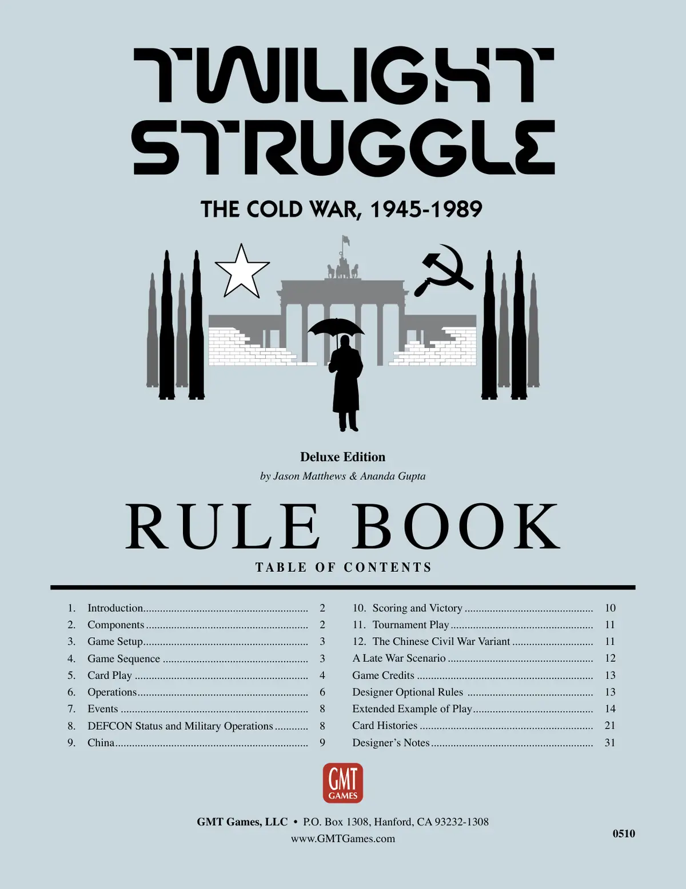
© 2007 GMT Games, LLC
GMT Games, LLC • P.O. Box 1308, Hanford, CA 93232-1308
www.GMTGames.com
0510
规则书
作者：Jason Matthews & Ananda Gupta
- 简介........................................................... 2
- 组件........................................................... 2
3.
游戏设置........................................................... 3
4.
游戏流程..................................................... 3
5.
卡牌使用............................................................... 4
6.
行动............................................................. 6
7.
事件.................................................................... 8
8.
DEFCON状态与军事行动............. 8
9.
中国..................................................................... 9
目 录
- 计分与胜利............................................... 10
- 锦标赛规则.................................................... 11
- 中国内战变体.............................. 11
晚期战争场景..................................................... 12
游戏制作人员................................................................ 13
设计师可选规则 .............................................. 13
扩展游戏示例........................................... 14
卡牌历史............................................................... 21
设计师笔记........................................................... 31
豪华版
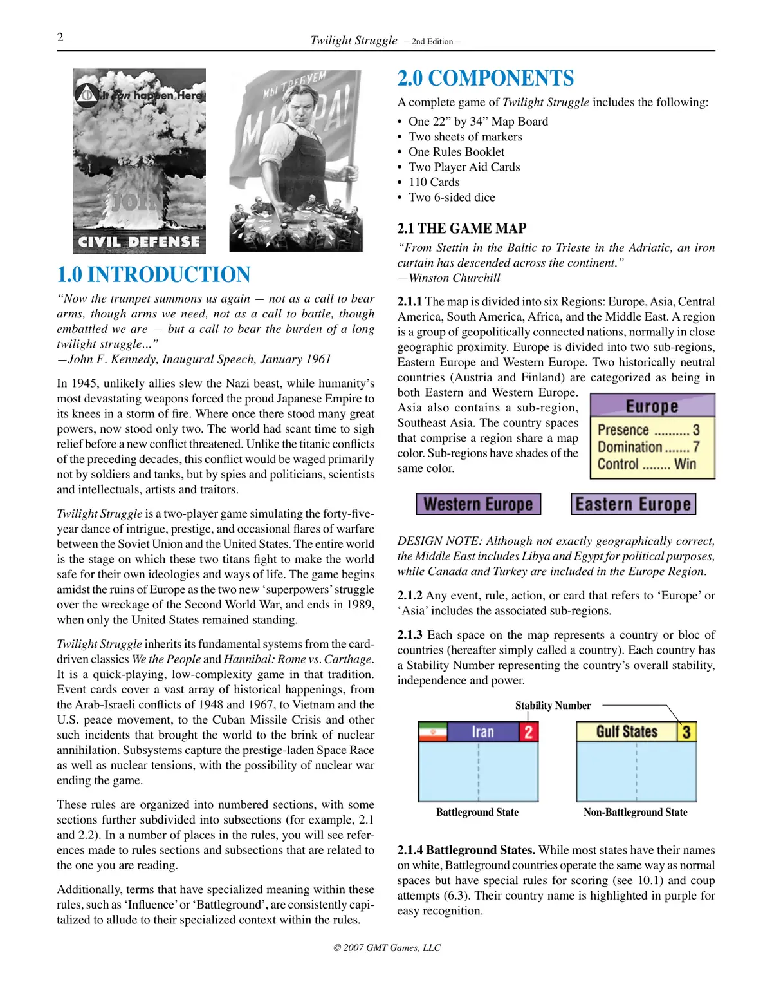
© 2007 GMT Games, LLC
1.0 引言
"现在，号角再次召唤我们——不是拿起武器的召唤，尽管我们需要武器；不是投入战斗的召唤，尽管我们已身陷战斗——而是承担漫长黄昏斗争的重负的召唤..."
——约翰·F·肯尼迪，1961年就职演说
1945年，不太可能的盟友击败了纳粹野兽，而人类最具毁灭性的武器则在烈火风暴中迫使骄傲的大日本帝国屈膝。曾经有许多大国屹立的地方，如今只剩下两个。世界几乎没有时间松一口气，新的冲突就已威胁而来。与此前几十年的巨大冲突不同，这场冲突主要不是由士兵和坦克来进行的，而是由间谍和政治家、科学家和知识分子、艺术家和叛徒来进行的。
《冷战热斗》是一款双人游戏，模拟苏联和美国之间长达四十五年的阴谋、 prestige（影响力）和偶尔爆发的战争。整个世界都是这两个巨头为使世界安全地接受自己的意识形态和生活方式而斗争的舞台。游戏开始于欧洲的废墟之中，两个新的"超级大国"在第二次世界大战的废墟上争夺，并于1989年结束，那时只剩下美国仍然屹立不倒。
《冷战热斗》继承了其基本系统来自以卡牌驱动的经典游戏《我们人民》(We the People)和《汉尼拔：罗马对迦太基》(Hannibal: Rome vs. Carthage)。按照这一传统，它是一款快速进行、低复杂度的游戏。事件卡涵盖了广泛的历史事件，从1948年和1967年的阿拉伯-以色列冲突，到越南战争和美国和平运动，再到古巴导弹危机和其他将世界推向核毁灭边缘的事件。子系统包含了充满 prestige 的太空竞赛以及核紧张局势，有可能以核战争结束游戏。
这些规则被组织成编号章节，有些章节进一步细分为小节（例如，2.1和2.2）。在规则中的多处地方，您会看到对与您正在阅读的章节相关的规则章节和小节的引用。
此外，在本规则中有特殊含义的术语，如"Influence"（影响力）或"Battleground"（战场国家），始终被大写，以暗示它们在规则中的特殊语境。
2.0 游戏组件
完整的《冷战热斗》游戏包括以下内容：
• 一张22"×34"的地图板
• 两张标记纸
• 一本规则手册
• 两张玩家辅助卡
• 110张卡牌
• 两颗六面骰
2.1 游戏地图
"从波罗的海的什切青到亚得里亚海的的里雅斯特，一道铁幕已经降落在整个大陆上。"
——温斯顿·丘吉尔
2.1.1 地图被分为六个区域：欧洲、亚洲、中美洲、南美洲、非洲和中东。区域是一组地缘政治上相连的国家，通常在地理上邻近。欧洲分为两个子区域：东欧和西欧。两个历史上中立的国家（奥地利和芬兰）被归类为同时属于东欧和西欧。亚洲也包含一个子区域：东南亚。构成一个区域的国家空间共享地图颜色。子区域是同一颜色的不同色调。
设计说明：虽然不完全符合地理准确性，但出于政治目的，中东包括利比亚和埃及，而加拿大和土耳其则被归入欧洲区域。
2.1.2 任何事件、规则、行动或卡牌中提到"欧洲"或"亚洲"都包括相关的子区域。
2.1.3 地图上的每个空间代表一个国家或国家集团（此后简称为国家）。每个国家都有一个稳定性数字，代表国家的整体稳定性、独立性和力量。
2.1.4 战场国家。虽然大多数国家的名称显示为白色，但战场国家与普通空间运作方式相同，但在计分（见10.1）和政变尝试（6.3）方面有特殊规则。为便于识别，其国家名称以紫色高亮显示。
战场国家
稳定性数字
非战场国家
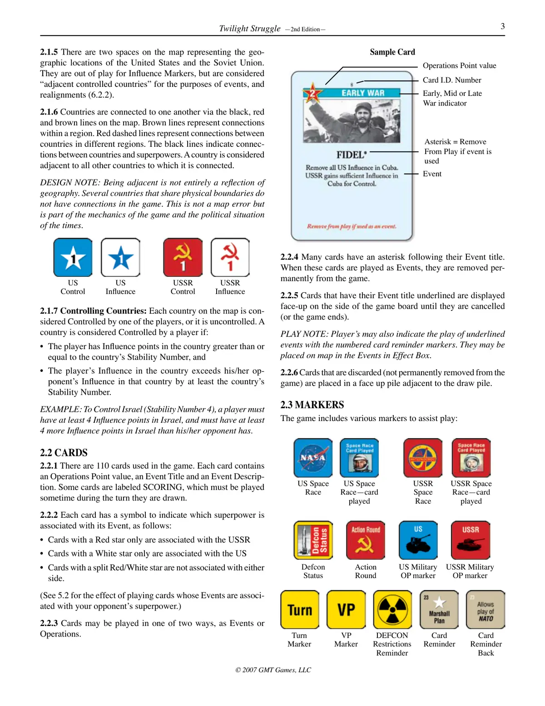
© 2007 GMT Games, LLC
2.2.4 许多卡牌的事件标题后带有星号(*)。当这些卡牌作为事件打出时，它们会从游戏中永久移除。
2.2.5 事件标题下划线的卡牌会正面朝上放置在游戏版图旁边，直到它们被取消（或游戏结束）。
游戏提示：玩家也可以使用带编号的卡牌提示标记来标示下划线事件的打出。这些标记可以放置在版图上的"生效事件"框内。
2.2.6 被弃置的卡牌（不是从游戏中永久移除的）会放置在抽牌堆旁边的一个正面朝上的牌堆中。
2.3 标记
游戏包含各种辅助游戏的标记：
2.1.5 地图上有两个空间代表美国和苏联的地理位置。这些空间对影响力标记无效，但在事件和重整(6.2.2)中，它们被视为"相邻控制国"。
2.1.6 国家通过地图上的黑色、红色和棕色线条相互连接。棕色线条代表区域内的连接。红色虚线代表不同区域国家之间的连接。黑色线条表示国家与超级大国之间的连接。一个国家被认为与所有与其连接的国家相邻。
设计说明：相邻关系不完全反映地理现实。一些在物理边界上接壤的国家在游戏中没有连接。这不是地图错误，而是游戏机制和当时政治状况的一部分。
2.1.7 控制国家：地图上的每个国家被认为由玩家之一控制，或者未被控制。一个国家被认为由玩家控制，如果：
• 玩家在该国的影响力点数大于或等于该国的稳定数，并且
• 玩家在该国的影响力超过其对手在该国的影响力至少等于该国的稳定数。
示例：要控制以色列（稳定数为4），玩家必须在以色列至少拥有4点影响力，并且必须在以色列的影响力比其对手至少多4点。
2.2 卡牌
2.2.1 游戏中使用110张卡牌。每张卡牌包含行动点值、事件标题和事件描述。一些卡牌标记为"计分"，必须在抽到的回合内某个时间打出。
2.2.2 每张卡牌都有一个符号，表示与其事件关联的超级大国，如下：
• 只有红色星星的卡牌与苏联关联
• 只有白色星星的卡牌与美国关联
• 红白混合星星的卡牌不与任何一方关联。
（关于打出与对手超级大国关联的事件卡牌的效果，请参见5.2。）
2.2.3 卡牌可以通过两种方式之一打出：作为事件或行动。
美国太空竞赛
美国控制
美国影响力
苏联控制
苏联影响力
美国太空竞赛—打出的卡牌
苏联太空竞赛
苏联太空竞赛—打出的卡牌
回合标记
VP标记
DEFCON限制
提示卡
提示卡
提示卡背面
Defcon状态
行动
轮次
美国军事行动点标记
苏联军事行动点标记
事件
早期、中期或晚期战争指示器
卡牌编号
行动点值
星号 = 如果使用事件则从游戏中移除
示例卡牌
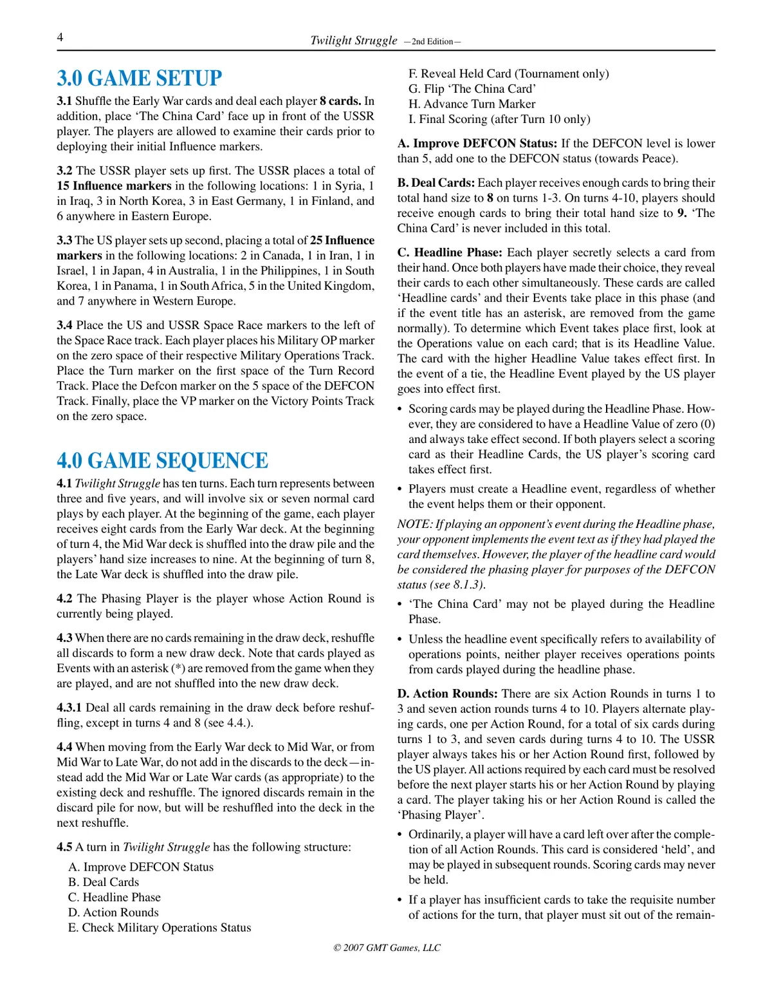
© 2007 GMT Games, LLC
3.0 游戏设置
3.1 洗混"早期战争"牌组，每位玩家发8张牌。此外，将"中国牌"面朝上放在苏联玩家面前。玩家在部署初始影响力标记前，可以查看自己的牌。
3.2 苏联玩家先进行设置。苏联总共放置15个影响力标记在以下位置：叙利亚1个，伊拉克1个，朝鲜3个，东德3个，芬兰1个，以及东欧任意位置6个。
3.3 美国玩家第二进行设置，总共放置25个影响力标记在以下位置：加拿大2个，伊朗1个，以色列1个，日本1个，澳大利亚4个，菲律宾1个，韩国1个，巴拿马1个，南非1个，英国5个，以及西欧任意位置7个。
3.4 将美国和苏联的太空竞赛标记放在太空竞赛轨道的左侧。每位玩家将其军事行动标记放在各自军事行动轨道的零位上。将回合标记放在回合记录轨道的第一格。将核战状态标记放在核战状态轨道的5格上。最后，将胜利点标记放在胜利点轨道的零位上。
4.0 游戏流程
4.1 冷战热斗共有10个回合。每个回合代表3到5年，每位玩家将在每个回合中进行6或7次正常的出牌。游戏开始时，每位玩家从早期战争牌组中获得8张牌。在第4回合开始时，中期战争牌组被洗入抽牌堆，玩家的手牌数量增加到9张。在第8回合开始时，晚期战争牌组被洗入抽牌堆。
4.2 主导玩家是指当前正在执行其行动回合的玩家。
4.3 当抽牌堆中没有剩余牌时，将所有弃牌重新洗混形成新的抽牌堆。注意，带有星号(*)作为事件打出的牌在打出后会被移出游戏，不会洗入新的抽牌堆。
4.3.1 在重新洗牌前，将抽牌堆中剩余的所有牌分发给玩家，但在第4和第8回合除外（见4.4）。
4.4 当从早期战争牌组转换到中期战争，或从中期战争转换到晚期战争时，不要将弃牌加入牌组——而是将中期战争或晚期战争牌（视情况而定）加入现有牌组并重新洗牌。被忽略的弃牌暂时留在弃牌堆中，但会在下一次重新洗牌时被洗入牌组。
4.5 冷战热斗的一个回合结构如下：
A. 改善核战状态
B. 发牌
C. 头条阶段
D. 行动回合
E. 检查军事行动状态
F. 揭示持有牌（仅限比赛）
G. 翻转"中国牌"
H. 推进回合标记
I. 最终计分（仅在第10回合后）
A. 改善核战状态：如果核战等级低于5，将核战状态增加一级（趋向和平）。
B. 发牌：在第1-3回合，每位玩家获得足够数量的牌，使手牌总数达到8张。在第4-10回合，玩家应获得足够数量的牌，使手牌总数达到9张。"中国牌"不计入此总数。
C. 头条阶段：每位玩家秘密从手牌中选择一张牌。两位玩家都做出选择后，同时向对方展示自己的牌。这些牌被称为"头条牌"，它们的事件在此阶段发生（如果事件标题带有星号，则按正常规则移出游戏）。要确定哪个事件先发生，查看每张牌上的行动点数值；这就是它的头条值。头条值较高的牌先生效。如果平局，美国玩家的头条事件先生效。
• 计分牌可以在头条阶段打出。然而，它们被视为头条值为零(0)，并且总是后生效。如果两位玩家都选择计分牌作为他们的头条牌，美国玩家的计分牌先生效。
• 玩家必须创建头条事件，无论该事件是对自己有利还是对对手有利。
注意：如果在头条阶段打出对手的事件，对手将执行事件文本，就像他们自己打出这张牌一样。但是，头条牌的打出者将被视为主导玩家，用于核战状态判定（见8.1.3）。
• "中国牌"不能在头条阶段打出。
• 除非头条事件特别提到行动点的可用性，否则两位玩家都不能从头条阶段打出的牌中获得行动点。
D. 行动回合：在第1-3回合中有6个行动回合，在第4-10回合中有7个行动回合。玩家轮流打出牌，每个行动回合一张，在第1-3回合总共打出6张牌，在第4-10回合总共打出7张牌。苏联玩家总是先进行其行动回合，然后是美国玩家。每位玩家必须解决每张牌要求的所有行动，然后下一位玩家才能通过打出一张牌开始其行动回合。进行行动回合的玩家被称为"主导玩家"。
• 通常，在所有行动回合完成后，玩家会剩下一张牌。这张牌被视为"持有牌"，可以在后续回合中打出。计分牌永远不能被持有。
• 如果玩家没有足够的牌来进行该回合所需数量的行动，该玩家必须跳过剩余的
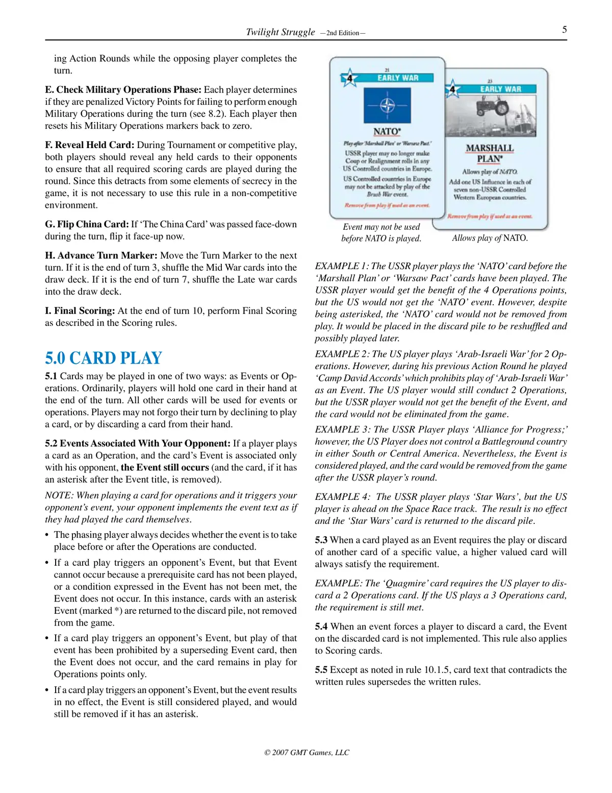
© 2007 GMT Games, LLC
在对方玩家完成其回合时，继续进行行动轮次。
E. 检查军事行动阶段：每位玩家确定是否因在本回合中执行了足够的军事行动而受到胜利点惩罚（参见8.2）。然后每位玩家将其军事行动标记重置为零。
F. 公开手牌：在比赛或竞技游戏中，双方玩家应向对手公开任何手牌，以确保所有必要的计分牌在回合中被打出。由于这会削弱游戏中的一些保密元素，在非竞技环境中不必使用此规则。
G. 翻转中国牌：如果"中国牌"在本回合中被面朝下传递，现在将其面朝上翻转。
H. 推进回合标记：将回合标记推进到下一回合。如果是第3回合结束，将冷战中期牌洗入牌堆。如果是第7回合结束，将冷战后期牌洗入牌堆。
I. 最终计分：在第10回合结束时，按照计分规则描述执行最终计分。
5.0 卡牌使用
5.1 卡牌可以通过两种方式之一使用：作为事件或作为行动。通常，玩家会在回合结束时保留一张手牌。所有其他卡牌都将用于事件或行动。玩家不得通过不出牌或弃手牌来放弃自己的回合。
5.2 与对手相关的事件：如果玩家将一张牌作为行动打出，且该牌的事件仅与其对手相关，事件仍然会发生（并且，如果事件标题后有星号，该牌将被移除）。
注意：当为行动而打牌并触发对手的事件时，对手实施事件文本，就好像他们自己打出了这张牌一样。
• 当前行动玩家总是决定事件是在行动执行之前还是之后发生。
• 如果打牌触发对手的事件，但由于未打出先决条件卡牌或未满足事件中表达的条件，该事件无法发生，则事件不发生。在这种情况下，有星号事件（标记*）的牌将被返回到弃牌堆，而不是从游戏中移除。
• 如果打牌触发对手的事件，但该事件的打出已被覆盖的事件牌禁止，则事件不会发生，该牌仅保留用于行动点数。
• 如果打牌触发对手的事件，但事件导致无效果，事件仍被视为已打出，并且如果有星号，仍会被移除。
示例1：苏联玩家在"马歇尔计划"或"华沙条约"牌被打出之前打出"北约"牌。苏联玩家将获得4行动点数的好处，但美国不会获得"北约"事件。然而，尽管有星号，"北约"牌不会被移出游戏。它将被放入弃牌堆，以便重新洗牌并可能在之后打出。
示例2：美国玩家为2行动点数打出"阿以战争"。然而，在他之前的行动轮中，他打出了"戴维营协议"，该协议禁止将"阿以战争"作为事件打出。美国玩家仍将进行2行动，但苏联玩家不会获得事件的好处，该牌也不会从游戏中被消除。
示例3：苏联玩家打出"进步联盟"；然而，美国玩家在南美或中美洲不控制任何战场国家。尽管如此，事件仍被视为已打出，在苏联玩家的回合结束后，该牌将被移出游戏。
示例4：苏联玩家打出"星球大战"，但美国玩家在太空竞赛轨道上领先。结果是无效果，"星球大战"牌被返回到弃牌堆。
5.3 当作为事件打出的牌需要打出或弃掉另一张特定点数的牌时，更高点数的牌将总是满足要求。
示例："泥潭"牌要求美国玩家弃掉一张2行动牌。如果美国打出一张3行动牌，要求仍然满足。
5.4 当事件强制玩家弃掉一张牌时，被弃掉牌上的事件不会实施。此规则也适用于计分牌。
5.5 除非规则10.1.5中注明，否则与书面规则相矛盾的牌文优先于书面规则。
允许打出北约。
事件在北约打出前
不得使用。
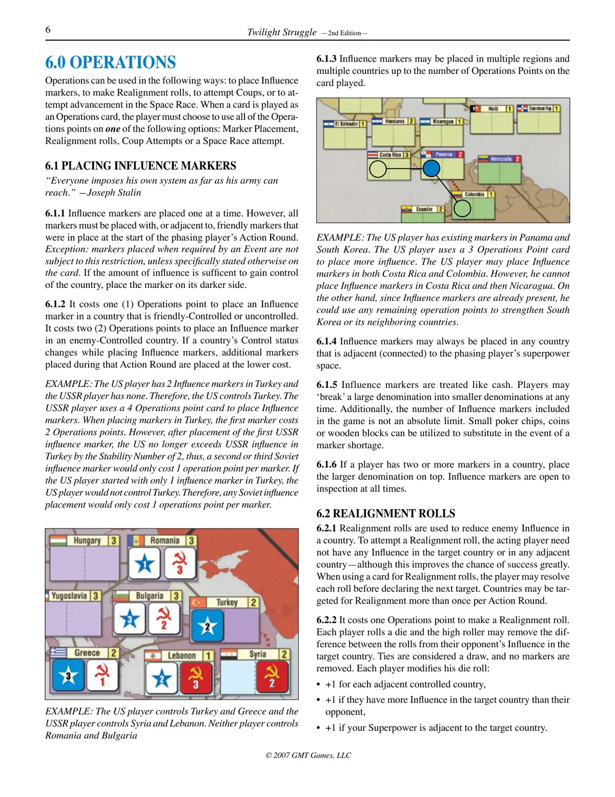
© 2007 GMT Games, LLC
6.1.3 影响力标记可以放置在多个区域和多个国家中，数量不超过所使用卡牌上的行动点数。
示例：美国玩家在巴拿马和韩国已有影响力标记。美国玩家使用一张3行动点卡牌来放置更多影响力。美国玩家可以在哥斯达黎加和哥伦比亚都放置影响力标记。但是，他不能在哥斯达黎加和尼加拉瓜都放置影响力标记。另一方面，由于已有影响力标记存在，他可以使用任何剩余的行动点来加强韩国或其邻国。
6.1.4 影响力标记总是可以放置在任何与当前回合玩家超级大国空间相邻（连接）的国家中。
6.1.5 影响力标记被视为现金。玩家可以随时将大面额"兑换"为小面额。此外，游戏中的影响力标记数量并非绝对限制。如果标记短缺，可以使用小型扑克筹码、硬币或木块来替代。
6.1.6 如果一个国家中有两个或更多标记，将较大面额的标记放在上面。影响力标记随时可以接受检查。
6.2 重整掷骰
6.2.1 重整掷骰用于减少敌人在一个国家的影响力。尝试重整掷骰时，行动玩家不必在目标国家或任何相邻国家拥有影响力——尽管这会大大提高成功几率。当使用卡牌进行重整掷骰时，玩家可以在宣布下一个目标前解决每次掷骰。每个行动回合中，一个国家可以被多次作为重整目标。
6.2.2 进行一次重整掷骰需要花费1个行动点。每位玩家掷一次骰，点数较高的一方可以从对手在目标国家的影响力中移除双方点数的差值。平局视为平手，不移除任何标记。每位玩家修改自己的骰子点数：
• 每个相邻的受控国家+1，
• 如果他们在目标国家的影响力多于对手+1，
• 如果你的超级大国与目标国家相邻+1。
6.0 行动
行动可以用于以下方式：放置影响力标记、进行重整掷骰、尝试政变或尝试在太空竞赛中前进。当卡牌作为行动卡使用时，玩家必须选择将所有行动点用于以下选项之一：放置标记、重整掷骰、政变尝试或太空竞赛尝试。
6.1 放置影响力标记
"只要军队到达的地方，每个人都强加自己的制度。"——约瑟夫·斯大林
6.1.1 影响力标记一次放置一个。但是，所有标记必须与当前回合玩家行动回合开始时已存在的友好标记一起放置，或放置在其相邻位置。例外：事件要求放置的标记不受此限制，除非卡牌上特别说明相反情况。如果影响力足以控制该国，将标记放在其较深的一面。
6.1.2 在友好控制或未控制的国家放置一个影响力标记需要花费1个行动点。在敌方控制的国家放置一个影响力标记需要花费2个行动点。如果在放置影响力标记时，一个国家的控制状态发生变化，那么在该行动回合期间放置的额外标记将以较低成本放置。
示例：美国玩家在土耳其有2个影响力标记，苏联玩家没有。因此，美国控制土耳其。苏联玩家使用一张4行动点卡牌来放置影响力标记。在土耳其放置标记时，第一个标记需要2个行动点。然而，在放置第一个苏联影响力标记后，美国在土耳其的影响力不再超过苏联2个稳定数值，因此，第二个或第三个苏联影响力标记每个只需花费1个行动点。如果美国玩家在土耳其开始时只有1个影响力标记，美国玩家将不控制土耳其。因此，任何苏联影响力的放置每个标记只需花费1个行动点。
示例：美国玩家控制土耳其和希腊，苏联玩家控制叙利亚和黎巴嫩。两位玩家都不控制罗马尼亚和保加利亚。
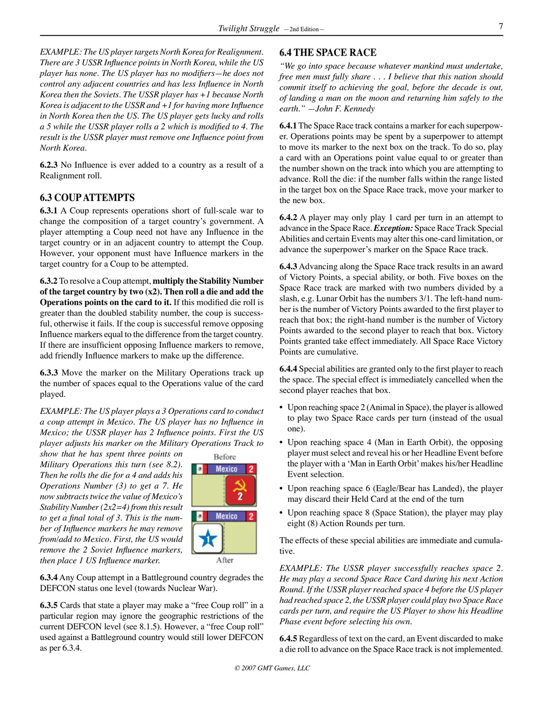
© 2007 GMT Games, LLC
示例：美国玩家针对朝鲜进行重整。
朝鲜有3个苏联影响力点，而美国玩家没有。美国玩家没有修正值——他不控制任何相邻国家，并且在朝鲜的影响力少于苏联。苏联玩家有+1分，因为朝鲜与苏联相邻，并且在朝鲜的影响力多于美国。美国玩家幸运地掷出5，而苏联玩家掷出2，修正后为4。结果是苏联玩家必须从朝鲜移除一个影响力点。
6.2.3 重整掷牌结果永远不会向一个国家增加任何影响力。
6.3 政变尝试
6.3.1 政变代表未达到全面战争规模的行动，旨在改变目标国家政府的组成。尝试政变的玩家不必在目标国家或相邻国家有任何影响力。然而，对手必须在目标国有影响力标记才能尝试政变。
6.3.2 要解决政变尝试，将目标国家的稳定数值乘以二(x2)。然后掷一个骰子，并将卡牌上的行动点数加到骰子上。如果修正后的骰子点数大于两倍的稳定数值，政变成功，否则失败。如果政变成功，从目标国移除等于差值数量的敌方影响力标记。如果敌方影响力标记不足以移除，则添加友好影响力标记以补足差值。
6.3.3 将军事行动轨道上的标记向上移动等于所出卡牌行动点数值的空间。
示例：美国玩家打出一张3行动点的卡牌，试图在墨西哥进行政变。美国玩家在墨西哥没有影响力；苏联玩家有2个影响力点。首先，美国玩家调整他在军事行动轨道上的标记，表明他在这一回合已经花费了三点在军事行动上（参见8.2）。然后他掷骰子得到4，加上他的行动数值(3)，得到7。现在他从这个结果中减去墨西哥稳定数值的两倍(2x2=4)，得到最终总数3。这是他可以从墨西哥移除/添加的影响力标记数量。首先，美国会移除2个苏联影响力标记，然后放置1个美国影响力标记。
6.3.4 对任何战备国家的政变尝试都会使DEFCON状态降一级（走向核战争）。
6.3.5 声明玩家可以在特定地区进行"免费政变掷牌"的卡牌可以忽略当前DEFCON级别的地理限制（参见8.1.5）。然而，针对战备国家的"免费政变掷牌"仍会按照6.3.4降低DEFCON。
6.4 太空竞赛
"我们进入太空，因为无论人类必须做什么，自由人都必须完全参与......我相信这个国家应该致力于在本十年结束前实现这个目标：将一个人送上月球并安全返回地球。"——约翰·F·肯尼迪
6.4.1 太空竞赛轨道包含每个超级大国的标记。超级大国可以花费行动点，尝试将其标记移动到轨道上的下一个方框。为此，打出一张行动点数值等于或大于你试图进入的方框上显示数字的卡牌。掷骰子：如果数字落在太空竞赛轨道目标方框列出的范围内，将你的标记移动到新方框。
6.4.2 玩家每回合只能打一张卡牌尝试在太空竞赛中前进。例外：太空竞赛轨道特殊能力和某些事件可以改变这一单卡限制，或推进超级大国在太空竞赛轨道上的标记。
6.4.3 在太空竞赛轨道上前进会获得胜利积分、特殊能力或两者兼得。太空竞赛轨道上有五个方框标记着两个由斜杠分隔的数字，例如"月球轨道"有数字3/1。左边的数字是第一个到达该方框的玩家获得的胜利积分数；右边的数字是第二个到达该方框的玩家获得的胜利积分数。获得的胜利积分立即生效。所有太空竞赛胜利积分都是累积的。
6.4.4 特殊能力只授予第一个到达该空间的玩家。当第二个玩家到达该方框时，特殊效果立即取消。
• 到达空间2（动物进入太空）时，玩家每回合可以打两张太空竞赛卡（通常是一张）。
• 到达空间4（人类进入地球轨道）时，对手玩家必须在拥有"人类进入地球轨道"的玩家选择其头条事件之前，选择并揭示其头条事件。
• 到达空间6（鹰/熊着陆）时，玩家可以在回合结束时弃置其持有的卡牌。
• 到达空间8（空间站）时，玩家每回合可以进行八（8）个行动轮。
这些特殊能力的效果是立即生效且累积的。
示例：苏联玩家成功到达空间2。他可以在下一个行动轮打第二张太空竞赛卡。如果苏联玩家在到达空间2之前已经到达空间4，苏联玩家每回合可以打两张太空竞赛卡，并要求美国玩家在选择自己的头条事件前展示其头条阶段事件。
6.4.5 无论卡牌上的文本如何，为在太空竞赛轨道上前进而掷骰子而弃置的事件不会被执行。
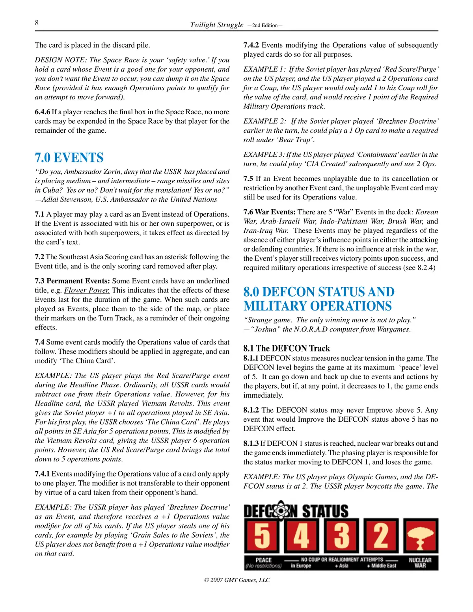
© 2007 GMT Games, LLC
该牌被放入弃牌堆。
设计说明：太空竞赛是你的"安全阀"。如果你持有对手事件对你有利的牌，且你不希望该事件发生，你可以将其投入太空竞赛（前提是该牌有足够的行动点数以符合前进尝试的条件）。
6.4.6 如果某玩家到达太空竞赛的最后一个方格，则该玩家在游戏剩余时间内不得再投入牌进行太空竞赛。
7.0 事件
"佐林大使，你是否否认苏联已在古巴并正在古巴部署中程和中远程导弹及基地？是还是不是？不要等翻译！是还是不是？"
——阿德莱·史蒂文森，美国驻联合国大使
7.1 玩家可以将一张牌作为事件打出，而不是用于行动。如果事件与玩家自己的超级大国相关，或与两个超级大国都相关，则按照牌面文本指示生效。
7.2 东南亚记分牌在事件标题后有一个星号，是唯一在打出后会被移除的记分牌。
7.3 永久事件：某些事件牌的标题有下划线，例如"花的力量"。这表示这些事件的效果将持续整个游戏。当这些牌作为事件打出时，将其放在地图旁边，或将其标记放在回合轨道上，以提醒其持续效果。
7.4 某些事件牌会改变后续牌的行动值。这些修正值应累加计算，并可应用于"中国牌"。
示例：美国玩家在头条阶段打出"红色恐慌/清洗"事件。通常情况下，所有苏联牌的行动值都会减一。然而，对于他的头条牌，苏联玩家打出了"越南起义"事件。该事件给予苏联玩家在东南亚的所有行动+1。对于他的第一次出牌，苏联玩家选择"中国牌"。他将所有点数投入东南亚，获得5个行动点。这被"越南起义"牌修正，使苏联玩家获得6个行动点。但是，美国的"红色恐慌/清洗"牌将总数降至5个行动点。
7.4.1 修正牌行动值的事件只对一名玩家有效。修正值不会因为从对手手中获得牌而转移给对手。
示例：苏联玩家已将"勃列日涅夫主义"作为事件打出，因此他的所有牌都获得+1行动值修正。如果美国玩家通过打出"对苏粮食销售"偷走他的一张牌，美国玩家不会在该牌上获得+1行动值修正。
7.4.2 修正后续牌行动值的事件对所有目的都有效。
示例1：如果苏联玩家对美国玩家打出"红色恐慌/清洗"，而美国玩家打出一张2行动点的牌进行政变，美国玩家只会为牌的价值在政变投掷中加1，并获得1个所需军事行动轨道的点数。
示例2：如果苏联玩家在回合早些时候打出"勃列日涅夫主义"，他可以打出1行动点牌以在"熊陷阱"下进行所需投掷。
示例3：如果美国玩家在回合早些时候打出"遏制"，他可以随后打出"中情局创建"并使用2行动点。
7.5 如果由于被另一张事件牌取消或限制而使事件无法打出，无法打出的事件牌仍可用于其行动值。
7.6 战争事件：牌组中有5个"战争"事件：朝鲜战争、阿以战争、印巴战争、边境战争和两伊战争。无论攻击国或防御国是否有任何玩家的影响力点数，这些事件都可以打出。如果在战争中没有面临影响力的风险，事件玩家成功后仍会获得胜利点数，无论成功与否都会获得所需军事行动（见8.2.4）。
8.0 DEFCON状态与军事行动
"奇怪的游戏。唯一的获胜方式是不玩。"
——《战争游戏》中的N.O.R.A.D计算机"约书亚"
8.1 DEFCON轨道
8.1.1 DEFCON状态衡量游戏中的核紧张程度。DEFCON级别在游戏开始时处于其最高"和平"级别5。它可以因事件和玩家的行动而下降和上升，但如果在任何时候降至1，游戏立即结束。
8.1.2 DEFCON状态永远不会改善到5以上。任何将DEFCON状态改善到5以上的事件都没有DEFCON效果。
8.1.3 如果达到DEFCON 1状态，核战争爆发，游戏立即结束。当前玩家负责状态标记移动到DEFCON 1，并输掉游戏。
示例：美国玩家打出"奥林匹克运动会"事件，DEFCON状态为2。苏联玩家抵制游戏。
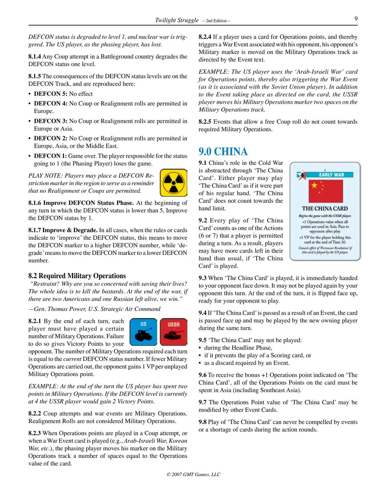
© 2007 GMT Games, LLC
DEFCON状态降级至1级，核战争被触发。作为当前回合玩家的美国玩家输掉了游戏。
8.1.4 在战区国家进行的任何政变尝试都会使DEFCON状态降一级。
8.1.5 DEFCON状态等级的后果在DEFCON轨道上显示，并在此重现：
• DEFCON 5：无效果
• DEFCON 4：在欧洲不允许进行政变或再平衡检定。
• DEFCON 3：在欧洲或亚洲不允许进行政变或再平衡检定。
• DEFCON 2：在欧洲、亚洲或中东不允许进行政变或再平衡检定。
• DEFCON 1：游戏结束。导致状态降至1级的玩家（当前回合玩家）输掉游戏。
游戏提示：玩家可以在相应区域放置一个DEFCON限制标记，作为不允许进行再平衡或政变的提醒。
8.1.6 改善DEFCON状态阶段。在任何DEFCON状态低于5的回合开始时，将DEFCON状态改善1级。
8.1.7 改善与降级。在所有情况下，当规则或卡牌指示"改善"DEFCON状态时，这意味着将DEFCON标记移向更高的DEFCON数字，而"降级"意味着将DEFCON标记移向更低的DEFCON数字。
8.2 必要军事行动
"克制？你为什么这么关心拯救他们的生命？整个想法就是杀死那些混蛋。战争结束时，如果还有两个美国人和一个俄国人活着，我们就赢了。"
——托马斯·鲍尔将军，美国战略空军司令部
8.2.1 在每个回合结束时，每位玩家必须进行一定数量的军事行动。未能这样做将使对手获得胜利点数。每回合所需的军事行动数量等于当前的DEFCON状态数字。如果进行的军事行动较少，对手将获得每个未进行的军事行动点数1个胜利点。
示例：在回合结束时，美国玩家已在军事行动上花费了2个点数。如果DEFCON等级当前为4，苏联玩家将获得2个胜利点。
8.2.2 政变尝试和战争事件都是军事行动。再平衡检定不被视为军事行动。
8.2.3 当在政变尝试中使用行动点，或者当战争事件卡牌被使用时（例如，阿以战争、朝鲜战争等），当前回合玩家将其军事行动标记在军事行动轨道上向前移动等于该卡牌行动值的格数。
8.2.4 如果一名玩家使用卡牌的行动点，从而触发了与对手相关的战争事件，其对手的军事标记将按照事件文本的指示在军事行动轨道上移动。
示例：美国玩家使用"阿以战争"卡牌的行动点，同时也触发了战争事件（因为它与苏联玩家相关）。除了按照卡牌指示执行事件外，苏联玩家将其军事行动标记在军事行动轨道上向前移动两格。
8.2.5 允许进行免费政变检定的事件不计入必要的军事行动。
9.0 中国
9.1 中国在冷战中的角色通过"中国卡"来抽象化。任一玩家都可以将"中国卡"当作其手牌的一部分来使用。"中国卡"不计入手牌限制。
9.2 每次"中国卡"的使用都算作玩家在一个回合中被允许的行动（6或7）之一。因此，如果使用了"中国卡"，玩家手牌中剩余的卡牌可能比平时多。
9.3 当"中国卡"被使用时，它立即被面朝下交给对手。对手在本回合内不能再次使用它。在回合结束时，它被翻转为面朝上，准备对手使用。
9.4 如果"中国卡"因事件而被传递，卡牌是面朝上传递的，新的拥有玩家可以在同一回合内使用它。
9.5 "中国卡"不能在以下情况下使用：
• 在标题阶段，
• 如果它阻止了计分卡的使用，或
• 作为事件要求的弃牌。
9.6 要获得"中国卡"上标示的+1行动点奖励，卡牌上的所有行动点必须用于亚洲（包括东南亚）。
9.7 "中国卡"的行动点价值可能被其他事件卡牌修改。
9.8 "中国卡"的使用永远不能在行动阶段被事件或卡牌短缺所强制。
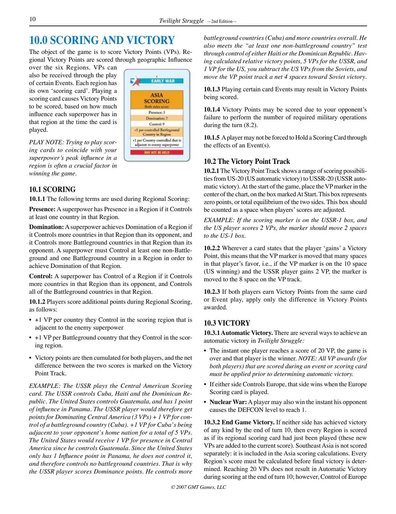
© 2007 GMT Games, LLC
10.0 计分与胜利
游戏的目标是获得胜利分数（VP）。区域胜利分数通过在六个区域上的地缘影响力获得。VP也可以通过某些事件的打出获得。每个区域都有自己的"计分卡"。打出计分卡会导致根据每个超级大国在该区域当时的影响力大小来计分。
游戏提示：尝试在超级大国在某个区域的影响力达到峰值时打出计分卡，这通常是赢得游戏的关键因素。
10.1 计分
10.1.1 在区域计分过程中使用以下术语：
存在：如果一个超级大国控制了该区域至少一个国家，则它在该区域拥有存在。
主导：如果一个超级大国控制了该区域比对手更多的国家，并且控制了比对手更多的战场国家，则它在该区域实现了主导。一个超级大国必须控制该区域至少一个非战场国家和一个战场国家，才能实现对该区域的主导。
控制：如果一个超级大国控制了该区域比对手更多的国家，并且控制了该区域所有的战场国家，则它控制了该区域。
10.1.2 玩家在区域计分过程中获得额外分数，如下：
• 在计分区域中，每控制一个与敌对超级大国相邻的国家，获得1 VP
• 在计分区域中，每控制一个战场国家，获得1 VP
• 然后计算两位玩家的总分，两个分数之间的净差额被标记在胜利分数轨道上。
示例：苏联打出中美洲计分卡。苏联控制了古巴、海地和多米尼加共和国。美国控制了危地马拉，并在巴拿马有1点影响力。因此，苏联玩家将因主导中美洲（3 VP）+控制一个战场国家（古巴）的1 VP+古巴与对手母国相邻的1 VP，总共获得5 VP。美国将因在中美洲的存在（控制危地马拉）获得1 VP。由于美国在巴拿马只有1点影响力，它不控制巴拿马，因此不控制任何战场国家。这就是为什么苏联玩家获得主导分数的原因。他控制了更多的战场国家（古巴）和更多的国家总数。他还通过控制海地或多米尼加共和国满足了"至少一个非战场国家"的条件。在计算相对胜利分数后，苏联5 VP，美国1 VP，从苏联分数中减去美国分数，将VP点标记向苏联胜利方向移动4格。
10.1.3 打出某些卡牌事件可能导致获得胜利分数。
10.1.4 由于对手未能在本回合执行所需数量的军事行动（8.2），可能获得胜利分数。
10.1.5 玩家不能因事件效果而被强制持有计分卡。
10.2 胜利分数轨道
10.2.1 胜利分数轨道显示了从美国-20（美国自动胜利）到苏联-20（苏联自动胜利）的一系列计分可能性。游戏开始时，将VP标记放在图表中央标记为"起始"的方框内。这个方框代表零分，或双方完全平衡。在调整玩家分数时，这个方框应被计算为一个空间。
示例：如果计分标记在苏联-1方框，而美国玩家获得2 VP，标记应向美国方向移动2格到美国-1方框。
10.2.2 无论何时卡牌说明玩家"获得"一个胜利分数，这意味着VP标记向该玩家有利方向移动相应格数，即如果VP标记在10格（美国领先），而苏联玩家获得2 VP，标记将移动到VP轨道上的8格。
10.2.3 如果两位玩家从同一张卡牌或事件打出中都获得胜利分数，只应用所授予胜利分数之间的差额。
10.3 胜利
10.3.1 自动胜利。在冷战热斗中有几种方式可以实现自动胜利：
• 当任一玩家达到20 VP分数时，游戏立即结束，该玩家获胜。注意：在确定自动胜利之前，必须应用所有在事件或计分卡期间获得的VP奖励（两位玩家）。
• 如果任一方控制了欧洲，当欧洲计分卡打出时，该方获胜。
• 核战争：当对手导致DEFCON级别达到1时，该玩家也可以立即获胜。
10.3.2 游戏结束胜利。如果到第10回合结束时，任何一方都未获得任何形式的胜利，则每个区域都如同其区域计分卡刚刚打出一样进行计分（这些新的VP被添加到当前分数中）。东南亚不单独计分：它包含在亚洲计分计算中。在确定最终胜利之前，必须计算每个区域的分数。在第10回合结束时的计分中达到20 VP不会导致自动胜利；然而，对欧洲的控制
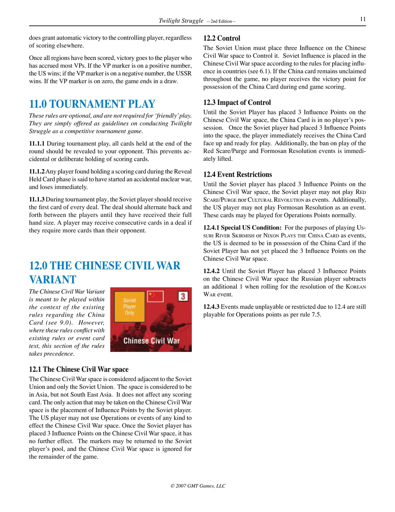
© 2007 GMT Games, LLC
会自动授予控制方玩家胜利，无论在其他地区的得分情况如何。
一旦所有地区都已计分，则累计VP最多的玩家获胜。如果VP标记在正数上，美国获胜；如果VP标记在负数上，苏联获胜。如果VP标记在零上，游戏以平局结束。
11.0 锦标赛规则
这些规则是可选的，在"友好"游戏中不需要。它们仅作为将冷战热斗作为竞技性锦标赛游戏进行的指导方针。
11.1.1 在锦标赛游戏中，回合结束时持有的所有卡牌都应向对手展示。这可以防止意外或故意持有计分卡。
11.1.2 在揭示持有卡阶段被发现持有计分卡的玩家被认为引发了意外核战争，并立即失败。
11.1.3 在锦标赛游戏中，苏联玩家应获得每次发牌的第一张牌。发牌应在玩家之间交替进行，直到他们获得完整的手牌数量。如果一名玩家需要的卡牌比对手多，他可以在一轮中获得连续的卡牌。
12.0 中国内战变体
中国内战变体应在现有关于中国卡的规则背景下进行（参见9.0）。然而，如果这些规则与现有规则或事件卡文本冲突，则以本规则章节为准。
12.1 中国内战区域
中国内战区域被认为与苏联相邻，且仅与苏联相邻。该区域被视为亚洲的一部分，但不属于东南亚。它不影响任何计分卡。唯一可以在中国内战区域采取的行动是由苏联玩家放置影响力点。美国玩家不得使用任何类型的行动点或事件来影响中国内战区域。一旦苏联玩家在中国内战区域放置了3个影响力点，它就不再有进一步效果。标记可以返回到苏联玩家的池中，中国内战区域在游戏的剩余部分将被忽略。
12.2 控制
苏联必须在中国内战区域放置3个影响力才能控制它。苏联影响力的放置遵循在各国放置影响力的规则（参见6.1）。如果中国卡在整个游戏中未被认领，则没有玩家在终局计分中获得拥有中国卡的胜利点。
12.3 控制的影响
在苏联玩家在中国内战区域放置3个影响力点之前，中国卡不被任何玩家拥有。一旦苏联玩家将3个影响力点放入该区域，玩家立即获得中国卡，正面朝上并可打出。此外，禁止打出"红色恐慌/清洗"和"福尔摩沙决议"事件的禁令立即解除。
12.4 事件限制
在苏联玩家在中国内战区域放置3个影响力点之前，苏联玩家不能将"红色恐慌/清洗"或"文化大革命"作为事件打出。此外，美国玩家不能将"福尔摩沙决议"作为事件打出。这些卡牌可以正常用于行动点。
12.4.1 特殊美国条件：为了打出"乌苏里河冲突"或"尼克松打中国牌"作为事件的目的，如果苏联玩家尚未在中国内战区域放置3个影响力点，则美国被视为拥有中国卡。
12.4.2 在苏联玩家在中国内战区域放置3个影响力点之前，俄罗斯玩家在解决朝鲜战争事件时掷骰子需额外减1。
12.4.3 由于12.4而无法打出或受到限制的事件仍可根据规则7.5用于行动点。
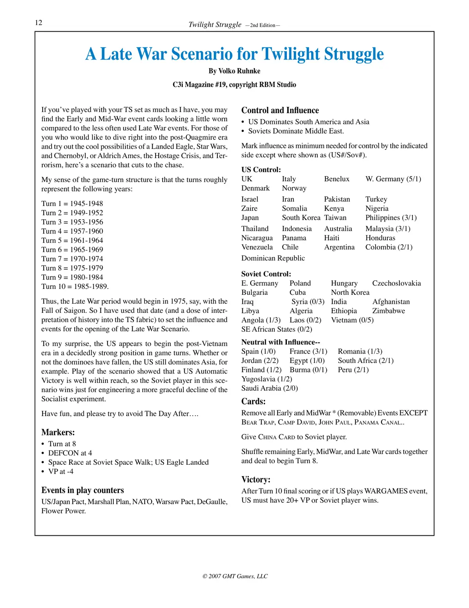
© 2007 GMT Games, LLC
晚期战争剧本（A Late War Scenario）
作者：Volko Ruhnke（C3i 杂志 #19，版权归 RBM Studio 所有）
如果你和我一样频繁地开《冷战热斗》的局，你可能会发现早期与中期战争事件牌比用得较少的晚期战争事件牌磨损得更厉害。对于想直接进入「沼泽」（Quagmire）之后时代、体验「雄鹰着陆」「星球大战」「切尔诺贝利」，或「奥尔德里奇·艾姆斯」「人质危机」「恐怖主义」这些精彩可能性的玩家，这里提供一个直奔主题的剧本。
我对游戏回合结构的理解是，各回合大致代表以下年份：
- 第 1 回合 = 1945–1948
- 第 2 回合 = 1949–1952
- 第 3 回合 = 1953–1956
- 第 4 回合 = 1957–1960
- 第 5 回合 = 1961–1964
- 第 6 回合 = 1965–1969
- 第 7 回合 = 1970–1974
- 第 8 回合 = 1975–1979
- 第 9 回合 = 1980–1984
- 第 10 回合 = 1985–1989
因此，晚期战争时期可以说始于 1975 年，以西贡陷落为标志。我以此为起点（并对历史做出一定融入 TS 框架的解读），设定了晚期战争剧本开局的影响力与事件布局。
令我意外的是，在这个剧本中，美国似乎以相当强势的姿态进入后越战时代。无论多米诺骨牌是否倒下，美国依然主导亚洲等地。剧本试玩显示美国达成自动胜利完全触手可及，因此本剧本中苏联玩家的胜利条件是：让社会主义实验体面地退潮（将比分咬住即可）。
玩得开心，并请尽量避免《末日之后》（The Day After）…….
标记设置：
- 回合标记置于 8
- DEFCON 置于 4
- 太空竞赛：苏联已达成「太空行走」，美国已达成「雄鹰着陆」
- VP 置于 -4
生效中的事件
《美日共同防务条约》《马歇尔计划》《北约》《华约》《戴高乐领导法国》《花之力》。
控制与影响力
- 美国「支配」南美洲与亚洲
- 苏联「支配」中东
除标注为（美国数/苏联数）外，影响力按所示阵营达成控制所需的最低数量放置。
美国控制：英国、意大利、比荷卢、西德（5/1）、丹麦、挪威、以色列、伊朗、巴基斯坦、土耳其、扎伊尔、索马里、肯尼亚、尼日利亚、日本、韩国、中国台湾、菲律宾（3/1）、泰国、印度尼西亚、澳大利亚、马来西亚（3/1）、尼加拉瓜、巴拿马、海地、洪都拉斯、委内瑞拉、智利、阿根廷、哥伦比亚（2/1）、多米尼加共和国。
苏联控制：东德、波兰、匈牙利、捷克斯洛伐克、保加利亚、古巴、朝鲜、伊拉克、叙利亚（0/3）、印度、阿富汗、利比亚、阿尔及利亚、埃塞俄比亚、津巴布韦、安哥拉（1/3）、老挝（0/2）、越南（0/5）、东南非洲国家（0/2）。
中立但有影响力：西班牙（1/0）、法国（3/1）、罗马尼亚（1/3）、约旦（2/2）、埃及（1/0）、南非（2/1）、芬兰（1/2）、缅甸（0/1）、秘鲁（2/1）、南斯拉夫（1/2）、沙特阿拉伯（2/0）。
卡牌
移除全部早期与中期战争带 *（可移除）事件，《熊陷阱》《戴维营》《约翰·保罗》《巴拿马运河》除外。将中国牌交给苏联玩家。其余早、中、晚期战争牌洗匀，自第 8 回合开始发牌。
胜利
第 10 回合终局计分后，或美国打出《战争游戏》事件时，美国须持有 20+ VP，否则苏联玩家获胜。
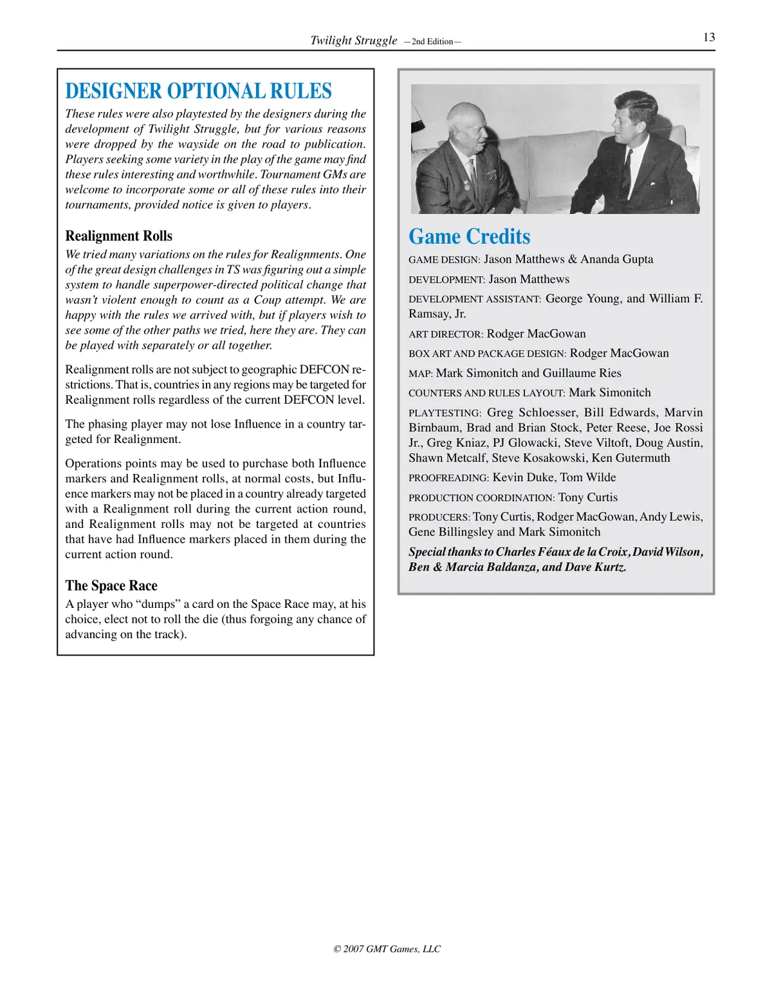
游戏制作人员
游戏设计：Jason Matthews & Ananda Gupta
开发：Jason Matthews
开发助理：George Young，以及 William F. Ramsay, Jr.
艺术总监：Rodger MacGowan
盒面与包装设计：Rodger MacGowan
地图：Mark Simonitch 和 Guillaume Ries
计数器与规则排版：Mark Simonitch
测试游戏：Greg Schloesser, Bill Edwards, Marvin Birnbaum, Brad 和 Brian Stock, Peter Reese, Joe Rossi Jr., Greg Kniaz, PJ Glowacki, Steve Viltoft, Doug Austin, Shawn Metcalf, Steve Kosakowski, Ken Gutermuth
校对：Kevin Duke, Tom Wilde
制作协调：Tony Curtis
制作人：Tony Curtis, Rodger MacGowan, Andy Lewis, Gene Billingsley 和 Mark Simonitch
特别感谢 Charles Féaux de la Croix, David Wilson, Ben & Marcia Baldanza, 和 Dave Kurtz。
设计师可选规则
这些规则在《冷战热斗》开发过程中也由设计师进行了测试，但由于各种原因在出版过程中被搁置。寻求游戏变化性的玩家可能会发现这些规则有趣且值得尝试。锦标赛主持人可以将其中的部分或全部规则纳入他们的锦标赛中，但需提前通知玩家。
重整掷骰
我们尝试了重整规则的多种变体。《冷战热斗》设计中的一个重大挑战是设计一个简单系统来处理超级大国主导的政治变革，而这种变革又不够激烈，不能算作政变尝试。我们对最终确定的规则感到满意，但如果玩家想看看我们尝试过的其他方案，这里提供一些。它们可以单独或一起使用。
重整掷骰不受地理性DEFCON限制。也就是说，无论当前DEFCON水平如何，任何地区的国家都可以成为重整掷骰的目标。
行动玩家不能在成为重整掷骰目标的国家中失去影响力。
行动点可用于购买影响力标记和重整掷骰，按正常成本，但在当前行动回合中，影响力标记不能放置在已被指定进行重整掷骰的国家中，重整掷骰也不能针对在当前行动回合中已放置影响力标记的国家。
太空竞赛
在太空竞赛中"弃牌"的玩家可以选择不掷骰子（从而放弃在轨道上前进的任何机会）。
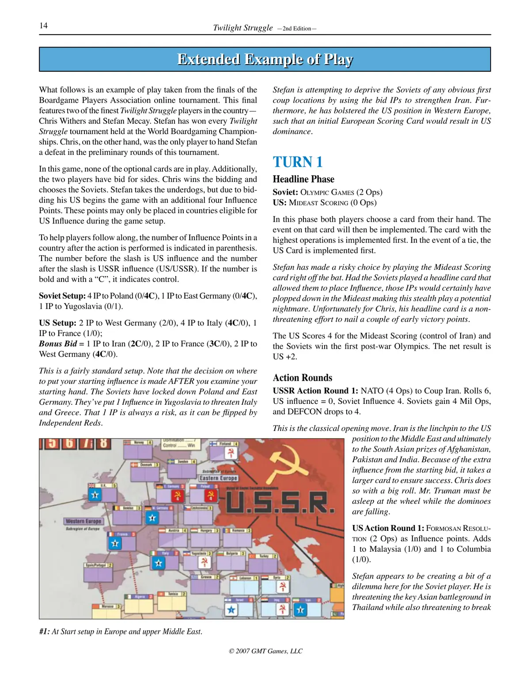
© 2007 GMT Games, LLC
扩展游戏示例
以下示例取自桌面游戏协会在线锦标赛的决赛。这场决赛
汇集了国内两位最优秀的冷战热斗玩家——
克里斯·威瑟斯(Chris Withers)和斯特凡·梅凯(Stefan Mecay)。
斯特凡赢得了在世界桌面游戏冠军赛上举办的每一次冷战热斗锦标赛。
而另一方面，克里斯是本锦标赛预选赛中唯一击败过斯特凡的玩家。
在本局游戏中，没有使用任何可选卡。此外，两位玩家通过竞标选择阵营。
克里斯赢得竞标并选择苏联。斯特凡选择了较弱的一方，但由于竞标，
他的美国在游戏开始时拥有额外的4点影响力。这些点只能在游戏设置期间放置在
有资格获得美国影响力的国家中。
为了帮助玩家理解，行动后一个国家的影响力点数用括号表示。
斜杠前的数字是美国影响力，斜杠后的数字是苏联影响力(美国/苏联)。
如果数字是粗体并有"C"，表示控制。
苏联设置：4点影响力到波兰(0/4C)，1点影响力到东德(0/4C)，
1点影响力到南斯拉夫(0/1)。
美国设置：2点影响力到西德(2/0)，4点影响力到意大利(4C/0)，1
点影响力到法国(1/0)；
竞标奖励 = 1点影响力到伊朗(2C/0)，2点影响力到法国(3C/0)，2点
影响力到西德(4C/0)。
这是一个相当标准的设置。请注意，决定将起始影响力放在何处是在
查看起始手牌之后做出的。苏联已经控制了波兰和东德。
他们在南斯拉夫放了1点影响力以威胁意大利和希腊。
那1点影响力总是有风险，因为它可能被"独立红色"翻转。
斯特凡试图通过使用竞标影响力来加强伊朗，从而剥夺苏联任何明显的首次政变地点。
此外，他加强了美国在西欧的地位，使得初始的欧洲记分卡将导致美国的优势。
第1回合
头条阶段
苏联：奥运会(2点行动值)
美国：中东记分(0点行动值)
在这个阶段，两位玩家从手牌中选择一张卡。该卡上的事件
将被实施。行动值最高的卡先实施。如果平局，美国卡先实施。
斯特凡一开始就打出中东记分卡，这是一个冒险的选择。
如果苏联打出一张允许他们放置影响力的头条卡，那些影响力点
肯定会落在中东，使这次隐蔽行动成为潜在的噩梦。
不幸的是克里斯，他的头条卡是一次无威胁的尝试，旨在获取几个早期胜利点。
美国因中东记分获得4分(控制伊朗)，苏联赢得了战后第一届奥运会。
净结果是美国+2。
行动轮
苏联行动轮1：北约(4点行动值)用于政变伊朗。掷出6，
美国影响力=0，苏联影响力4。苏联获得4点军事行动值，
且DEFCON降至4。
这是经典的开局。伊朗是美国在中东地位的
关键，最终也是阿富汗、
巴基斯坦和印度等南亚奖品的基石。
由于起始竞标的额外影响力，需要更大的卡牌才能确保成功。
克里斯凭借一个大掷骰做到了这一点。当多米诺骨牌纷纷倒下时，
杜鲁门先生一定是在打瞌睡。
美国行动轮1：台湾决议(2点行动值)作为影响力点。
在马来西亚增加1点(1/0)，在哥伦比亚增加1点(1/0)。
斯特凡似乎在这里给苏联玩家制造了一个小小的困境。
他正在威胁亚洲关键战场泰国，同时也威胁着要打破
#1：初始设置在欧洲和中东上部。
扩展游戏示例
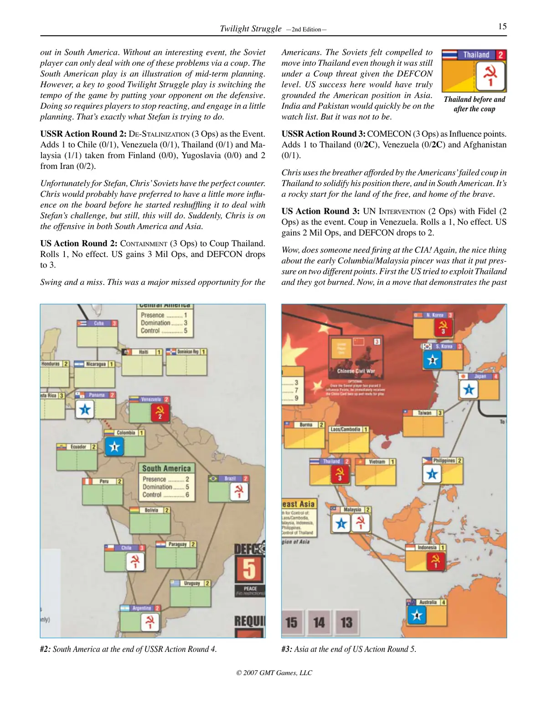
© 2007 GMT Games, LLC
渗透到南美。如果没有有趣的事件，苏联玩家只能通过政变来处理其中一个问题。南美的玩法体现了中期规划。然而，玩好《冷战热斗》的关键在于通过迫使对手处于防守状态来改变游戏节奏。这样做需要玩家停止被动反应，进行一些规划。这正是斯特凡正在尝试做的。
苏联行动轮2：去斯大林化（3点行动力）作为事件。增加1点智利（0/1）、委内瑞拉（0/1）、泰国（0/1）和马来西亚（1/1），从芬兰（0/0）、南斯拉夫（0/0）和伊朗（0/2）各取2点。
不幸的是对斯特凡来说，克里斯的苏联人有完美的应对。克里斯可能更希望在开始重新调整布局以应对斯特凡的挑战前，在棋盘上拥有更多影响力，但即便如此，这也足够了。突然间，克里斯在南美和亚洲都转入了进攻。
美国行动轮2：遏制（3点行动力）用于政变泰国。掷出1，无效。美国获得3点军事行动力，DEFCON降至3。
失之交臂。这对美国人来说是一个错失的重大机会。尽管DEFCON级别下泰国仍面临政变威胁，苏联人还是被迫进入泰国。如果美国在这里成功，将真正巩固其在亚洲的地位。印度和巴基斯坦很快就会被列入观察名单。但事与愿违。
苏联行动轮3：经济互助委员会（3点行动力）作为影响力点。增加1点泰国（0/2C）、委内瑞拉（0/2C）和阿富汗（0/1）。
克里斯利用美国在泰国政变失败的机会来巩固他在泰国和南美的地位。对于自由之地、勇敢之国来说，这是一个艰难的开局。
美国行动轮3：联合国干预（2点行动力）与菲德尔（2点行动力）作为事件。政变委内瑞拉。掷出1，无效。美国获得2点军事行动力，DEFCON降至2。
哇，有人需要被中情局解雇！早期哥伦比亚/马来西亚钳形攻势的好处在于它对两个不同点施加了压力。首先美国试图利用泰国，结果吃了苦头。现在，这个行动展示了过去
#2：苏联行动轮4结束时的南美局势。
#3：美国行动轮5结束时的亚洲局势。
政变前后的泰国
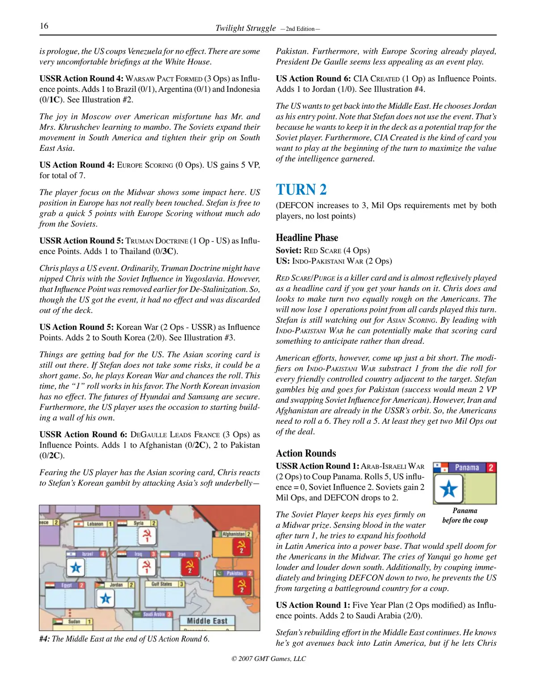
© 2007 GMT Games, LLC
序幕中，美国无效果地颠覆了委内瑞拉。白宫内进行了一些令人不安的简报。
苏联行动轮4：华沙条约组织成立（3行动点）作为影响力点。在巴西（0/1）、阿根廷（0/1）和印度尼西亚（0/1C）各增加1点。参见图例#2。
美国的不幸让莫斯科欢欣鼓舞，赫鲁晓夫夫妇开始学习曼博舞。苏联扩大了在南美的行动，并加强了对东南亚的控制。
美国行动轮4：欧洲计分（0行动点）。美国获得5VP，总分达到7。
玩家对中战时期的关注在这里产生了一些影响。美国在欧洲的地位实际上并未受到真正触及。斯特凡可以轻松地通过欧洲计分获得5分，而苏联方面却无能为力。
苏联行动轮5：杜鲁门主义（1行动点-美国）作为影响力点。在泰国（0/3C）增加1点。
克里斯打出了一张美国事件牌。通常情况下，杜鲁门主义可能会因为南斯拉夫的苏联影响力而让克里斯受挫。然而，那个影响力点早先因去斯大林化而被移除了。因此，尽管美国获得了该事件，但它没有效果并被弃出牌堆。
美国行动轮5：朝鲜战争（2行动点-苏联）作为影响力点。在韩国（2/0）增加2点。参见图例#3。
情况对美国越来越不利。亚洲计分牌仍然存在。如果斯特凡不冒些风险，游戏可能很快就会结束。因此，他打出朝鲜战争并赌了一把运气。这次，"1"的掷骰结果对他有利。北朝鲜入侵没有效果。现代和三星的未来得到了保障。此外，美国玩家利用这个机会开始建造自己的"墙"。
苏联行动轮6：戴高乐领导法国（3行动点）作为影响力点。在阿富汗（0/2C）增加1点，在巴基斯坦（0/2C）增加2点。
担心美国玩家持有亚洲计分牌，克里斯通过攻击亚洲的软肋——巴基斯坦来回应斯特凡的朝鲜冒险。此外，欧洲计分牌已经打出，戴高乐领导法国作为事件牌的吸引力似乎降低了。
美国行动轮6：中情局成立（1行动点）作为影响力点。在约旦（1/0）增加1点。参见图例#4。
美国想重新进入中东。他选择约旦作为切入点。注意斯特凡没有使用该事件。因为他想将它保留在牌堆中，作为对苏联玩家的潜在陷阱。此外，中情局成立是那种你希望在回合开始时打出的牌，以最大化获取的情报价值。
第2回合
（DEFCON升至3，双方玩家都满足了军事行动点要求，没有失分）
头条阶段
苏联：红色恐慌（4行动点）
美国：印巴战争（2行动点）
红色恐慌/清洗是一张致命牌，如果你拿到它，几乎会本能地作为头条牌打出。克里斯拿到了它，并希望让第二回合对美国人同样艰难。美国玩家将从本回合打出的所有牌中失去1个行动点。
斯特凡仍然关注着亚洲计分。通过打出印巴战争作为头条，他可能使那张计分牌变成值得期待而非恐惧的东西。
然而，美国的努力稍显不足。印巴战争的修正值会根据目标国相邻的友好控制国数量从掷骰结果中减去1。斯特凡大胆下注，选择巴基斯坦（成功意味着2VP并将苏联影响力替换为美国影响力）。然而，伊朗和阿富汗已经在苏联的势力范围内。因此，美国人需要掷出6。他们掷出了5。至少他们从这次行动中获得了2个军事行动点。
行动轮
苏联行动轮1：阿以战争
（2行动点）用于颠覆巴拿马。掷出5，美国影响力=0，苏联影响力2。苏联获得2军事行动点，DEFCON降至2。
苏联玩家坚定地盯着中战时期的奖励。在第一回合感觉到有利可图后，他试图在南美的立足点扩展为权力基地。那将对美国人在中战时期造成毁灭性打击。"美国佬回家"的呼声在南边越来越响亮。此外，通过立即颠覆并将DEFCON降至2，他阻止了美国针对一个战场国家进行颠覆。
美国行动轮1：五年计划（2修正行动点）作为影响力点。在沙特阿拉伯（2/0）增加2点。
斯特凡在中东的重建工作继续进行。他知道他重新进入拉丁美洲的途径，但如果他让克里斯
#4：美国行动轮6结束时的中东。
巴拿马
颠覆前
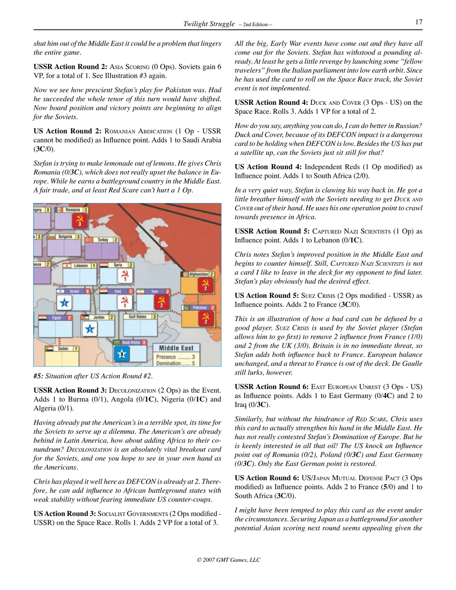
© 2007 GMT Games, LLC
如果将他排除在中东之外，这可能成为一个贯穿整个游戏的隐患。
苏联行动轮2：亚洲计分（0行动点）。苏联获得6VP，总计1VP。再次参见图例#3。
现在我们看到Stefan对巴基斯坦的布局是多么有远见。如果他成功了，整个这一轮的基调都会转变。现在，棋盘位置和胜利点数开始对苏联有利。
美国行动轮2：罗马尼亚退位（1行动点-苏联无法修改）作为影响力点。在沙特阿拉伯增加1点（3C/0）。
Stefan试图在困境中寻找机会。他给Chris罗马尼亚（0/3C），这并没有真正打破欧洲的平衡。同时，他在中东获得一个战场国家。这是一笔公平的交易，而且至少"红色恐慌"不会伤害到1行动点。
#5：美国行动轮#2后的局势。
苏联行动轮3：非殖民化（2行动点）作为事件。在缅甸（0/1）、安哥拉（0/1C）、尼日利亚（0/1C）和阿尔及利亚（0/1）各增加1点。
在已经让美国人陷入困境后，现在是苏联给对方制造难题的时候了。美国已经在拉丁美洲落后，要不要再给他们增加一个非洲的难题？"非殖民化"对苏联来说是绝对重要的突破卡，作为美国，你也希望在自己的手中看到这张卡。
Chris在这里打得很好，因为DEFCON已经是2。因此，他可以在非洲的战场国家增加影响力，而不用担心立即遭到美国的反政变。
美国行动轮3：社会主义政府（2行动点-被苏联修改）用于太空竞赛。投出1。增加2VP，总计3VP。
所有重大的早期战争事件都已出现，而且全部对苏联有利。Stefan已经承受了猛烈的打击。至少他通过将一些"同路人"从意大利议会送入近地轨道获得了一点报复。由于他用这张卡在太空竞赛轨道上投掷，苏联事件并未实施。
苏联行动轮4：蹲下掩护（3行动点-被美国修改）用于太空竞赛。投出3。增加1VP，总计2VP。
用俄语怎么说，"你能做的，我做得更好"？"蹲下掩护"由于其DEFCON影响，在DEFCON低时是一张危险的卡。而且美国已经发射了卫星，苏联能对此坐视不理吗？
美国行动轮4：独立红色分子（1行动点-被修改）作为影响力点。在南非增加1点（2/0）。
Stefan以一种非常低调的方式在慢慢找回位置。苏联需要打出"蹲下掩护"这张卡，他也得到了一点喘息的机会。他用他的1个行动点在非洲缓慢建立存在感。
苏联行动轮5：捕获纳粹科学家（1行动点）作为影响力点。在黎巴嫩增加1点（0/1C）。
Chris注意到Stefan在中东的改善位置并开始反击。不过，"捕获纳粹科学家"不是我喜欢留在牌堆让对手后来找到的卡。Stefan的打法显然达到了预期效果。
美国行动轮5：苏伊士危机（2行动点-被苏联修改）作为影响力点。在法国增加2点（3C/0）。
这说明了糟糕的卡如何被好玩家化解。苏联玩家（Stefan允许他先行动）使用"苏伊士危机"从法国移除2点影响力（1/0）和从英国移除2点影响力（3/0）。英国没有立即威胁，所以Stefan将这两点影响力都加回法国。欧洲平衡未变，而且对法国的威胁已从牌堆中移除。不过，戴高乐仍然潜伏着。
苏联行动轮6：东欧动荡（3行动点-被美国修改）作为影响力点。在东德增加1点（0/4C）和在伊拉克增加2点（0/3C）。
类似地，但没有"红色恐慌"的阻碍，Chris用这张卡实际上加强了自己在中东的地位。他并没有真正挑战Stefan对欧洲的主导。但他对所有的石油非常感兴趣！美国从罗马尼亚（0/2）、波兰（0/3C）和东德（0/3C）各移除1点影响力。只有东德的这点被恢复。
美国行动轮6：美日 mutual defense pact（3行动点-被修改）作为影响力点。在法国增加2点（5/0）和在南非增加1点（3C/0）。
在这种情况下，我可能倾向于将这张卡作为事件打出。考虑到下一轮可能有亚洲计分，确保日本作为一个战场国家似乎很有吸引力。
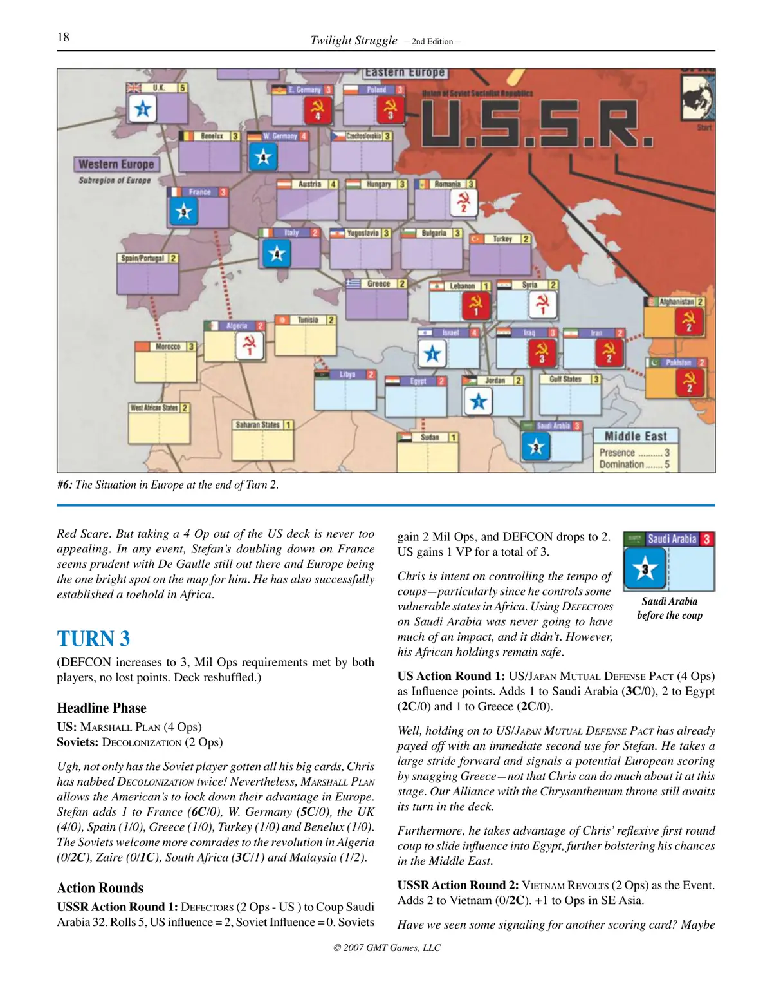
© 2007 GMT Games, LLC
红色恐慌。但从美国牌堆中取出4点行动点从来都不是太有吸引力的。无论如何，斯台范在戴高乐仍然存在且欧洲是他地图上唯一亮点的情况下，选择在法国上加倍下注似乎是明智的。他还成功地在非洲建立了一个立足点。
第3回合
（DEFCON升至3，双方玩家均满足军事行动点要求，无失分。牌堆重新洗牌。）
头条阶段
美国：马歇尔计划（4点行动）
苏联：非殖民化（2点行动）
唉，不仅苏联玩家拿到了他所有的大牌，克里斯还两次拿到了非殖民化！尽管如此，马歇尔计划使美国人能够巩固他们在欧洲的优势。斯台范在法国（6C/0）、西德（5C/0）、英国（4/0）、西班牙（1/0）、希腊（1/0）、土耳其（1/0）和比荷卢（1/0）各增加1点影响。苏联在阿尔及利亚（0/2C）、扎伊尔（0/1C）、南非（3C/1）和马来西亚（1/2）欢迎更多同志加入革命。
行动轮次
苏联行动轮次1：叛逃者（2点行动 - 美国）用于颠覆沙特阿拉伯32。投出5，美国影响=2，苏联影响=0。苏联获得2点军事行动，DEFCON降至2。
美国获得1VP，总计3VP。
克里斯意图控制政变的节奏——尤其是因为他在非洲控制着一些脆弱的国家。使用叛逃者针对沙特阿拉伯本来就不会有多大影响，而且确实没有。然而，他在非洲的资产仍然安全。
美国行动轮次1：美日 mutual defense pact（4点行动）作为影响力点。在沙特阿拉伯（3C/0）增加1点，在埃及（2C/0）增加2点，在希腊（2C/0）增加1点。
嗯，保留美日 mutual defense pact 已经立即为斯台范带来了第二次使用的机会，这已经得到了回报。他迈出了一大步，并通过夺取希腊来暗示潜在的欧洲计分——尽管克里斯在这个阶段对此无能为力。我们与菊花王座的联盟仍在等待它在牌堆中的轮次。
此外，他利用克里斯本能的第一轮政变，将影响力滑入埃及，进一步增强了他在中东的机会。
苏联行动轮次2：越南起义（2点行动）作为事件。在越南（0/2C）增加2点。东南亚行动点+1。
我们是否看到了对另一张计分牌的暗示？也许是#6：第2回合结束时的欧洲局势。
政变前的沙特阿拉伯
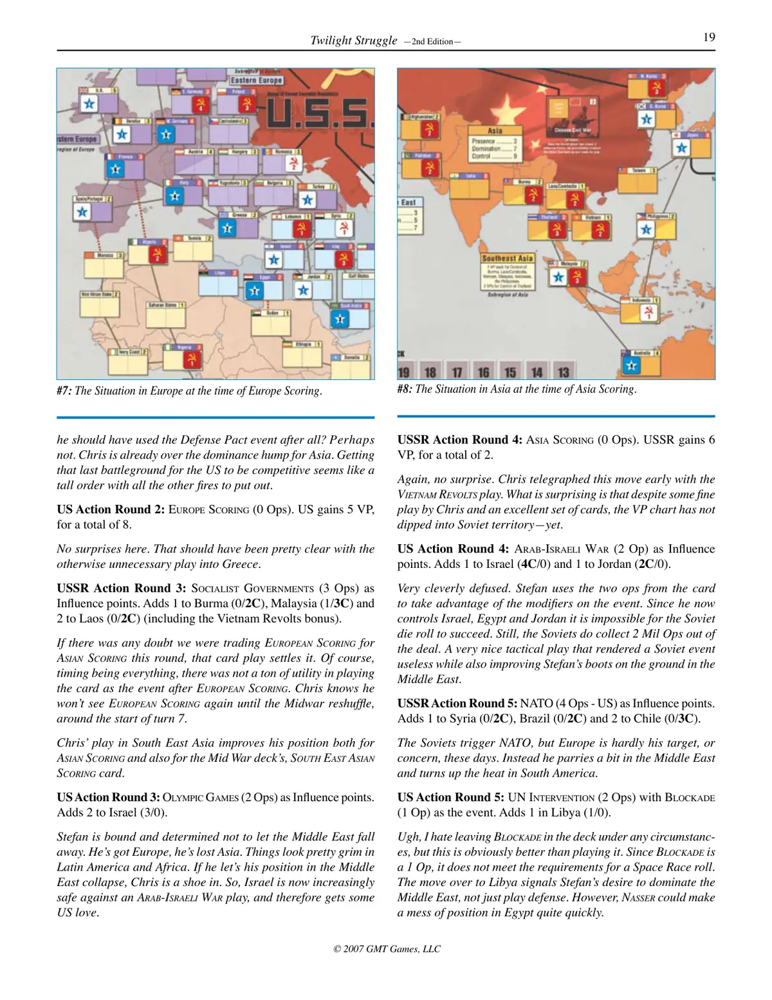
© 2007 GMT Games, LLC
他本应该在事后使用《防御条约》事件吗？也许不。克里斯已经在亚洲的统治力门槛之上。考虑到还有其他诸多问题需要处理，要让美国获得最后一个战场国家以保持竞争力，似乎是一项艰巨的任务。
美国行动轮2：欧洲计分（0行动点）。美国获得5VP，总计8分。
这里没有意外。之前在希腊的不必要行动已经表明了这一点。
苏联行动轮3：社会主义政府（3行动点）作为影响力点。在缅甸（0/2C）增加1点，在马来西亚（1/3C）增加1点，在老挝（0/2C）增加2点（包括越南叛乱奖励）。
如果我们之前有任何怀疑，认为这一轮我们是在用欧洲计分交换亚洲计分，那么这张牌的打出就确定了这一点。当然，时机至关重要，在欧洲计分后作为事件打出这张牌的效用不大。克里斯知道他直到战争中期洗牌（大约在第7轮开始时）前不会再看到欧洲计分。
克里斯在东南亚的行动改善了他在亚洲计分以及战争中期牌组中的东南亚计分牌上的位置。
美国行动轮3：奥林匹克运动会（2行动点）作为影响力点。在以色列（3/0）增加2点。
斯特凡决心不让中东地区失控。他已经控制了欧洲，失去了亚洲。拉丁美洲和非洲的局势看起来相当严峻。如果他让他在中东的地位崩溃，克里斯就稳操胜券了。因此，以色列现在对阿拉伯-以色列战争牌的抵抗力越来越强，也因此得到了美国的青睐。
苏联行动轮4：亚洲计分（0行动点）。苏联获得6VP，总计2分。
再次，没有意外。克里斯早先的越南叛乱行动已经预示了这一步。令人惊讶的是，尽管克里斯玩得很出色，手牌也很优秀，但VP计分表仍未进入苏联区域——尚未。
美国行动轮4：阿拉伯-以色列战争（2行动点）作为影响力点。在以色列（4C/0）增加1点，在约旦（2C/0）增加1点。
非常巧妙地化解了。斯特凡利用这张牌的两个行动点来利用事件上的修正值。由于他现在控制着以色列、埃及和约旦，苏联的骰子投掷不可能成功。尽管如此，苏联确实从这桩交易中获得了2点军事行动点。这是一次非常漂亮的战术行动，使苏联事件失效，同时增强了斯特凡在中东的实地存在。
苏联行动轮5：北约（4行动点 - 美国）作为影响力点。在叙利亚（0/2C）增加1点，在巴西（0/2C）增加1点，在智利（0/3C）增加2点。
苏联触发了北约事件，但欧洲如今几乎不是他的目标或关注点。相反，他在中东进行了一些防御，同时在南美加大了压力。
美国行动轮5：联合国干预（2行动点）并封锁（1行动点）作为事件。在利比亚（1/0）增加1点。
唉，我讨厌在任何情况下将封锁牌留在牌组中，但这显然比打出它要好。由于封锁是1行动点，它不符合太空竞赛投掷的要求。向利比亚的移动表明了斯特凡主导中东的愿望，而不仅仅是防守。然而，纳塞尔可能会很快让埃及的局势变得混乱。
#7：欧洲计分时的欧洲局势。
#8：亚洲计分时的亚洲局势。
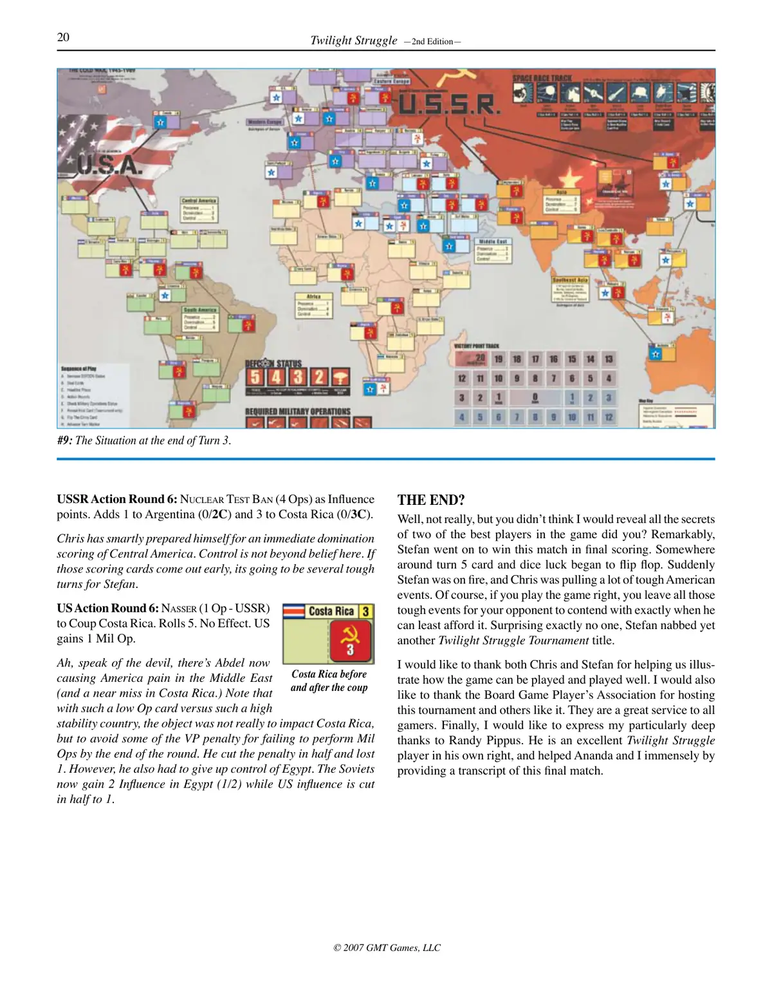
© 2007 GMT Games, LLC
#9: 第3回合结束时的局势。
苏联行动轮6: 《禁止核试验条约》(4点行动点)作为影响力点。
在阿根廷增加1点(0/2C)，在哥斯达黎加增加3点(0/3C)。
克里斯明智地为中美洲立即的支配评分做好了准备。这里的控制并非不可能。如果那些评分卡早早出现，对斯特凡来说将是几个艰难的回合。
美国行动轮6: 《纳赛尔》(1点行动点 - 苏联)用于颠覆哥斯达黎加。投出5点。无效果。美国获得1点军事行动点。
啊，说曹操曹操到，阿卜德尔现在在中东给美国带来痛苦(并在哥斯达黎加险些成功)。请注意，如此低行动点的卡牌面对如此高稳定性的国家，目标并非真正影响哥斯达黎加，而是为了避免在回合结束时未能执行军事行动点而遭受的部分VP惩罚。他将惩罚减半并损失1点。然而，他也必须放弃对埃及的控制权。苏联现在在埃及获得2点影响力(1/2)，而美国的影响力减半至1点。
结束了吗？
嗯，并非如此，但你不会以为我会揭示两位最佳玩家游戏的所有秘密吧？值得注意的是，斯特凡在最终评分中赢得了这场比赛。大约在第5回合，卡牌和骰子的运气开始转变。突然间斯特凡状态火热，而克里斯则抽到了许多艰难的美国事件。当然，如果你正确地游戏，你会把所有这些艰难事件留给对手，在他最无法承受的时候去应对。毫不意外，斯特凡又一次赢得了冷战热斗锦标赛冠军。
我想感谢克里斯和斯特凡，他们帮助我们展示了游戏如何被良好地进行。我还要感谢棋盘游戏玩家协会主办了这次及其他类似比赛。他们为所有玩家提供了很好的服务。最后，我想特别感谢兰迪·皮普斯。他本身是一位出色的冷战热斗玩家，通过提供这场决赛的记录，为我和阿南达提供了巨大的帮助。
颠覆前后的哥斯达黎加
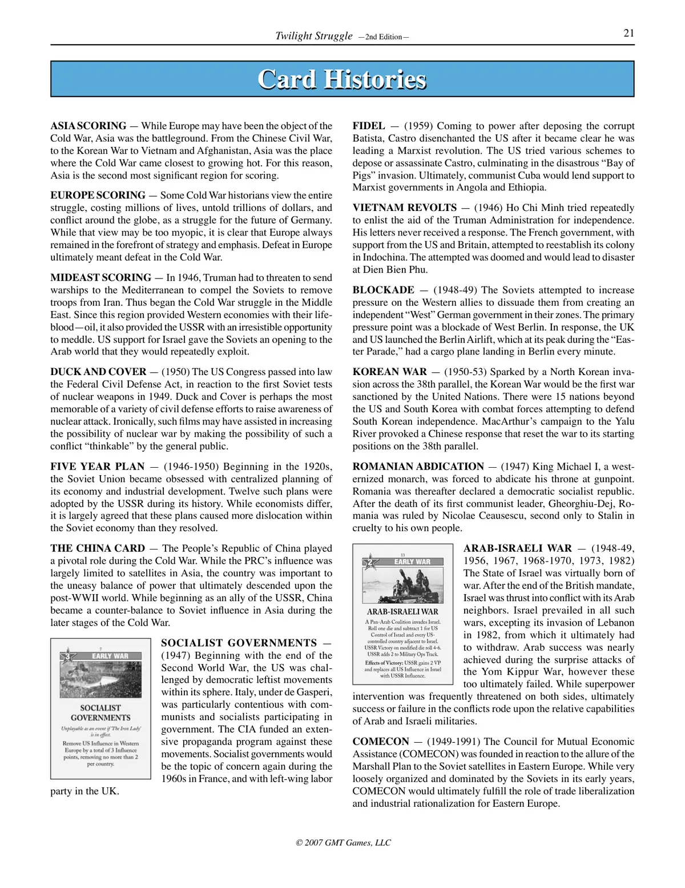
© 2007 GMT Games, LLC
亚洲计分 — 虽然欧洲可能是冷战的目标，但亚洲才是战场。从中国内战、朝鲜战争到越南战争和阿富汗战争，亚洲是冷战最接近热战的地方。因此，亚洲是计分中第二重要的地区。
欧洲计分 — 一些冷战史学家认为，整个冷战斗争，耗费了数百万人的生命、难以计数的万亿美元资金，并在全球范围内引发冲突，本质上是为了争夺德国的未来。尽管这种观点可能过于狭隘，但很明显，欧洲始终处于战略和关注的中心。在欧洲的失败最终意味着在冷战中的失败。
中东计分 — 1946年，杜鲁门不得不威胁派遣军舰到地中海，迫使苏联从伊朗撤军。由此开始了冷战在中东的斗争。由于该地区为西方经济体提供了生命线——石油，它也为苏联提供了无法抗拒的干涉机会。美国对以色列的支持为苏联打开了通往阿拉伯世界的大门，他们反复利用这一机会。
蹲下掩护 — (1950年) 作为对1949年苏联首次核武器试验的反应，美国国会通过了《联邦民防法》成为法律。蹲下掩护是各种提高核攻击意识的民防努力中最令人难忘的一种。具有讽刺意味的是，这类电影可能通过使公众认为这种冲突"可以想象"，反而增加了核战争的可能性。
五年计划 — (1946-1950年) 从1920年代开始，苏联开始痴迷于对其经济和工业发展的集中规划。在其历史上，苏联共采纳了十二个这样的计划。尽管经济学家们意见不一，但人们普遍认为这些计划造成的苏联经济失调比解决的问题更多。
中国牌 — 中华人民共和国在冷战期间发挥了关键作用。虽然中华人民共和国的影响力主要局限于亚洲的卫星国，但这个国家对于最终降临在二战后世界的不稳定力量平衡至关重要。虽然最初是苏联的盟友，但在冷战后期，中国成为亚洲地区制衡苏联影响力的力量。
社会主义政府 — (1947年) 从第二次世界大战结束开始，美国在其势力范围内面临民主左翼运动的挑战。在德加斯佩领导下的意大利尤其与共产党和社会党在政府中的参与存在争议。中央情报局资助了针对这些运动的广泛宣传计划。社会主义政府将在1960年代的法国再次成为关注焦点，以及英国左翼工党政府。
菲德尔 — (1959年) 在推翻腐败的巴蒂斯塔后上台，卡斯特罗在明确他正在领导一场马克思主义革命后让美国感到失望。美国尝试了各种计划来推翻或暗杀卡斯特罗，最终导致了灾难性的"猪湾"入侵。最终，古巴共产党会向安哥拉和埃塞俄比亚的马克思主义政府提供支持。
越南起义 — (1946年) 胡志明多次试图争取杜鲁门政府对独立的援助，但他的信件从未得到回应。在美国和英国的支持下，法国政府试图在印度支那重建其殖民地。这一尝试注定失败，并将在奠边府导致灾难。
封锁 — (1948-49年) 苏联试图增加对西方盟国的压力，阻止他们在占领区内建立一个独立的"西德"政府。主要的压力点是封锁西柏林。作为回应，英国和美国发起了柏林空运，在"复活节游行"期间，高峰期每分钟就有一架货运飞机降落在柏林。
朝鲜战争 — (1950-53年) 由朝鲜入侵三八线引发，朝鲜战争是联合国首次授权的战争。除了美国和韩国外，还有15个国家派遣作战部队试图捍卫韩国的独立。麦克阿瑟向鸭绿江的进攻引发了中国的回应，使战争回到三八线的起始位置。
罗马尼亚退位 — (1947年) 亲西方的君主迈克尔一世国王在枪口下被迫退位。此后罗马尼亚被宣布为民主社会主义共和国。在其第一位共产党领袖格奥尔基乌-德治去世后，罗马尼亚由尼古拉·齐奥塞斯库统治，他对本国人民的残忍程度仅次于斯大林。
阿拉伯-以色列战争 — (1948-49年、1956年、1967年、1968-1970年、1973年、1982年) 以色列国的诞生几乎完全源于战争。在英国委任统治结束后，以色列被卷入与阿拉伯邻国的冲突。以色列在所有这些战争中都取得了胜利，除了1982年入侵黎巴嫩，最终不得不撤出。在赎罪日战争的突袭中，阿拉伯人几乎取得了成功，但这些尝试最终也失败了。虽然超级大国经常威胁要介入，但冲突的成功或最终取决于阿拉伯和以色列军队的相对能力。
经济互助委员会 — (1949-1991年) 经济互助委员会(COMECON)的成立是为了应对马歇尔计划对东欧苏联卫星国的吸引力。虽然早期组织松散且由苏联主导，但COMECON最终为东欧发挥了贸易自由化和工业合理化的作用。
卡牌历史
卡牌历史
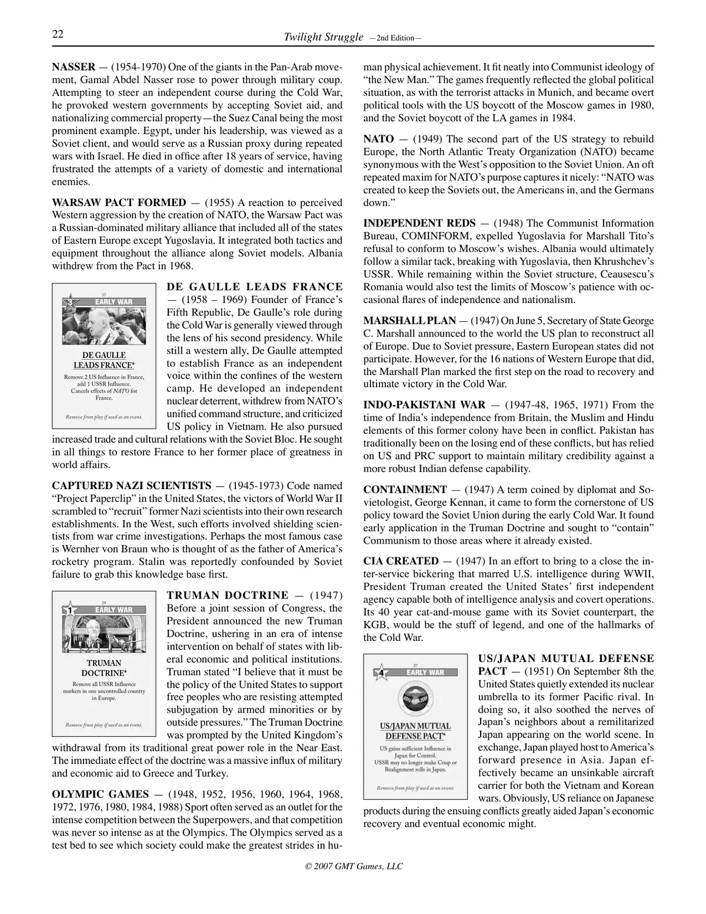
© 2007 GMT Games, LLC
纳赛尔 — (1954-1970) 贾迈勒·阿卜杜勒·纳赛尔是泛阿拉伯运动的巨人之一，通过军事政变上台。在冷战期间试图走独立路线，他因接受苏联援助和国有化商业财产而激怒了西方政府——苏伊士运河是最突出的例子。在他领导下的埃及被视为苏联的附庸，并在与以色列的多次战争中充当俄罗斯的代理人。他在任职18年后去世，挫败了国内外各种敌人的多次企图。
华沙条约组织成立 — (1955) 作为对北约创建所感知的西方侵略的反应，华沙条约组织是一个由苏联主导的军事联盟，包括了除南斯拉夫以外的所有东欧国家。它按照苏联模式在整个联盟中整合了战术和装备。阿尔巴尼亚于1968年退出该条约。
戴高乐领导法国 — (1958 – 1969) 法国第五共和国的创始人，戴高乐在冷战期间的作用通常通过他的第二任总统任期来审视。虽然仍是西方盟友，但戴高乐试图在西方阵营的框架内确立法国的独立声音。他发展了独立的核威慑力量，退出了北约的统一指挥结构，并批评了美国在越南的政策。他还追求与苏联集团增加贸易和文化关系。他在所有事务中都寻求恢复法国在世界事务中昔日伟大地位。
捕获纳粹科学家 — (1945-1973) 在美国被称为"回纹针计划"，二战胜利者争相"招募"前纳粹科学家到自己的研究机构。在西方，这些努力包括保护科学家免受战争罪调查。也许最著名的案例是沃纳·冯·布劳恩，他被认为是美国火箭计划之父。据报道，斯大林对苏联未能首先获取这一知识基础感到困惑。
杜鲁门主义 — (1947) 在国会联席会议上，总统宣布了新的杜鲁门主义，开启了为一个具有自由经济和政治制度的国家进行强力干预的时代。杜鲁门表示："我相信，美国的政策必须是支持那些正在抵抗武装少数派或外部压力企图征服的自由人民。"杜鲁门主义是由于英国从其在近东的传统大国角色撤退而引发的。该学说的直接影响是向希腊和土耳其大量涌入军事和经济援助。
奥林匹克运动会 — (1948, 1952, 1956, 1960, 1964, 1968, 1972, 1976, 1980, 1984, 1988) 体育常常成为超级大国之间激烈竞争的出口，而这种竞争在奥运会上最为激烈。奥运会成为检验哪个社会能在人类身体成就方面取得最大进展的试验场。它完美地契合了共产主义"新人"的意识形态。这些比赛经常反映全球政治局势，如慕尼黑的恐怖袭击，并成为公开的政治工具，如1980年美国抵制莫斯科奥运会，以及1984年苏联抵制洛杉矶奥运会。
北约 — (1949) 美国重建欧洲战略的第二部分，北大西洋公约组织(NATO)成为西方反对苏联的同义词。一句常被引用的关于北约目的的格言很好地概括了这一点："北约的创建是为了把苏联人挡在外面，把美国人留在里面，把德国人压下去。"
独立共产党 — (1948) 共产党情报局(COMINFORM)因铁托拒绝服从莫斯科的愿望而将南斯拉夫开除。阿尔巴尼亚最终也采取了类似路线，先是与南斯拉夫决裂，然后与赫鲁晓夫的苏联决裂。虽然仍留在苏联体系内，但齐奥塞斯库的罗马尼亚也会偶尔表现出独立和民族主义，测试莫斯科的耐心极限。
马歇尔计划 — (1947) 6月5日，国务卿乔治·C·马歇尔向世界宣布了美国重建整个欧洲的计划。由于苏联的压力，东欧国家没有参与。然而，对于参与的16个西欧国家来说，马歇尔计划标志着走向复苏和最终赢得冷战的第一步。
印巴战争 — (1947-48, 1965, 1971) 从印度脱离英国独立以来，这个前殖民地的穆斯林和印度教元素一直处于冲突中。巴基斯坦在这些冲突中传统上处于失败的一方，但依靠美国和中国的支持来维持对抗更强大的印度防御能力的军事可信度。
遏制政策 — (1947) 这个术语由外交官和苏联问题专家乔治·凯南创造，成为冷战初期美国对苏政策的基石。它在杜鲁门主义中得到了早期应用，并试图将"共产主义"限制在已经存在的地区。
中央情报局成立 — (1947) 为了结束二战期间损害美国情报工作的各军种间的争吵，杜鲁门总统创建了美国第一个能够进行情报分析和秘密行动的独立机构。它与苏联对应机构克格勃长达40年的猫鼠游戏将成为传奇，也是冷战的特征之一。
美日 mutual defense
条约 — (1951) 9月8日，美国悄悄将其核保护伞扩展到其前太平洋对手。这样做的同时，它也安抚了日本邻国对重新武装的日本出现在世界舞台上的担忧。作为交换，日本成为美国在亚洲的前沿存在。日本有效地成为越南战争和朝鲜战争的不沉航空母舰。显然，在随后的冲突中，美国对日本产品的极大依赖极大地促进了日本的经济复苏和最终的经济实力。
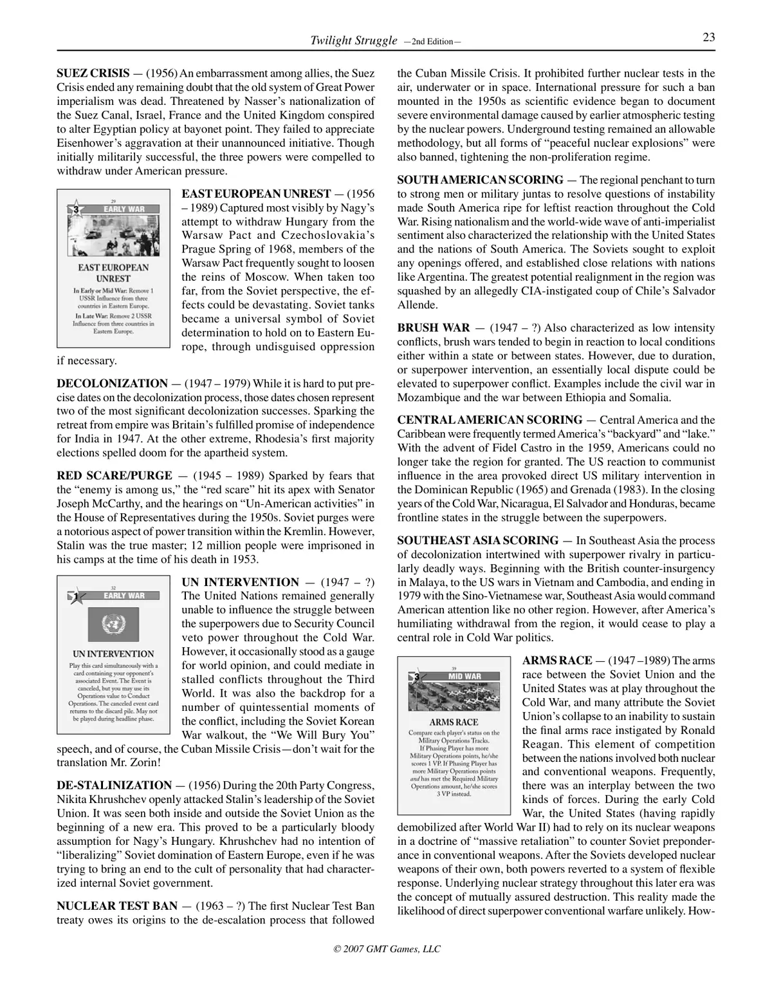
© 2007 GMT Games, LLC
苏伊士危机 — (1956) 苏伊士危机成为盟友间的尴尬事件，它彻底消除了人们对旧有大国帝国主义体系已经死亡的任何疑虑。面对纳赛尔将苏伊士运河国有化的威胁，以色列、法国和英国密谋以武力改变埃及政策。他们未能理解艾森豪威尔对他们未经事先通报的行动的恼怒。尽管最初在军事上取得了成功，但这三个大国还是在美国的压力下被迫撤军。
东欧动荡 — (1956-1989) 最为明显地体现在纳赛尔试图使匈牙利退出华沙条约以及1968年捷克斯洛伐克的"布拉格之春"，华沙条约成员国经常试图松开莫斯科的缰绳。当做得太过分时，从苏联的角度来看，后果可能是灾难性的。苏联坦克成为苏联决心保有东欧的普遍象征，必要时通过毫不掩饰的压迫手段。
非殖民化 — (1947-1979) 虽然很难为非殖民化过程确定确切日期，但所选日期代表了两个最重要的非殖民化成功案例。推动帝国撤退的是英国在1947年兑现了给予印度独立的承诺。在另一端，罗得西亚的首次多数选举预示了种族隔离制度的末日。
红色恐慌/清洗 — (1945-1989) 源于"敌人就在我们中间"的恐惧，"红色恐慌"在50年代参议员约瑟夫·麦卡锡和众议院"非美活动"听证会期间达到顶峰。苏联清洗是克里姆林宫权力过渡的一个臭名昭著的方面。然而，斯大林才是真正的掌控者；在他1953年去世时，有1200万人被关押在他的劳改营中。
联合国干预 — (1947-?) 由于安理会否决权在整个冷战期间的存在，联合国 generally 无法影响超级大国之间的斗争。然而，它偶尔可以作为世界舆论的晴雨表，并在第三世界陷入僵局的冲突中斡旋。它也是冲突中许多标志性时刻的背景，包括苏联在朝鲜战争中的退出、"我们将埋葬你们"的演讲，当然还有古巴导弹危机——佐林先生，别等翻译了！
去斯大林化 — (1956) 在第二十次党代会上，尼基塔·赫鲁晓夫公开攻击了斯大林对苏联的领导。这在苏联内外都被视为一个新时代的开始。这对纳赛尔的匈牙利来说，证明是一个特别血腥的假设。赫鲁晓夫无意"自由化"苏联对东欧的统治，即使他试图结束 characterized 苏联内部政府的个人崇拜。
核试验禁令 — (1963-?) 第一个核试验禁令条约源于古巴导弹危机后的降级进程。它禁止在大气层、水下或太空中进行进一步的核试验。随着科学证据开始记录核大国早期大气层试验造成的严重环境破坏，20世纪50年代国际社会对这种禁令的压力越来越大。地下试验仍然是一种允许的方法，但所有形式的"和平核爆炸"也被禁止，加强了不扩散机制。
南美计分 — 该地区倾向于依靠强人或军事委员会来解决不稳定问题，这使得南美在整个冷战期间容易受到左翼反应的影响。日益高涨的民族主义和全球范围内的反帝国主义情绪也 characterized 了与美国和南美国家的关系。苏联寻求利用任何提供的机会，并与阿根廷等国建立了密切关系。该地区最大的潜在重新调整被据称由中央情报局煽动的智利萨尔瓦多·阿连德政变所扼杀。
丛林战争 — (1947-?) 也被描述为低强度冲突，丛林战争往往开始于对国家内部或国家之间当地条件的反应。然而，由于持续时间或超级大国的干预，本质上是一个地方的争端可能被升级为超级大国冲突。例子包括莫桑比克的内战和埃塞俄比亚与索马里之间的战争。
中美洲计分 — 中美洲和加勒比地区经常被称为美国的"后院"和"湖泊"。随着1959年菲德尔·卡斯特罗的出现，美国人再也不能想当然地对待该地区。美国对该地区共产主义影响的反应直接导致了在多米尼加共和国(1965年)和格林纳达(1983年)的美国军事干预。在冷战末期，尼加拉瓜、萨尔瓦多和洪都拉斯成为超级大国斗争的前线国家。
东南亚计分 — 在东南亚，非殖民化过程与超级大国竞争以特别致命的方式交织在一起。从英国在马来亚的反叛乱行动，到美国在越南和柬埔寨的战争，再到1979年的中越战争，东南亚将比任何其他地区都更能吸引美国的注意力。然而，在美国在该地区蒙羞撤出后，它将不再在冷战政治中扮演核心角色。
军备竞赛 — (1947-1989) 苏联和美国之间的军备竞赛贯穿整个冷战，许多人认为苏联的崩溃是由于无法承受罗纳德·里根发起的最后一场军备竞赛。这种国家间的竞争元素既包括核武器也包括常规武器。经常，这两种力量之间存在相互作用。在冷战早期，美国(在二战后迅速复员)不得不依靠其核武器，奉行"大规模报复"学说来对抗苏联在常规武器上的优势。在苏联发展出自己的核武器后，两个大国都转向了灵活反应体系。在这个后期的整个核战略背后，是相互确保摧毁的概念。这一现实使得超级大国之间直接发生常规战争的可能性不大。如何-
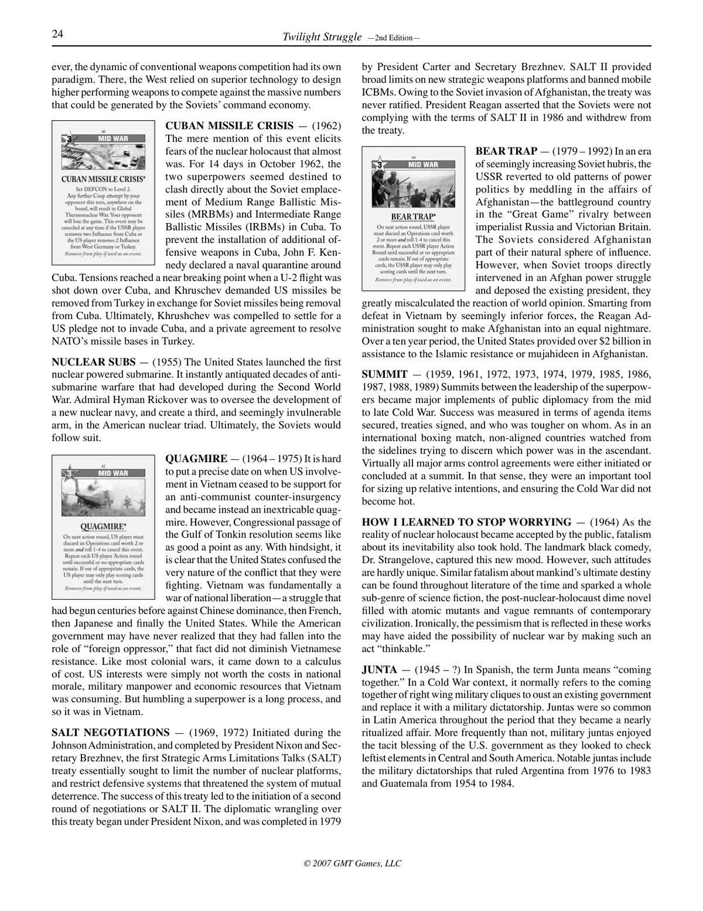
© 2007 GMT Games, LLC
然而，常规武器竞赛的动态有着其自身的范式。在这一领域，西方依赖优越的技术来设计性能更高的武器，以抗衡苏联指令型经济所能产生的庞大数量。
古巴导弹危机 — (1962)
仅仅提及这一事件，就会引发人们对那场险些发生的核浩劫的恐惧。1962年10月的14天里，两个超级大国似乎注定要因苏联在古巴部署中程弹道导弹（MRBM）和中远程弹道导弹（IRBM）而直接发生冲突。为了阻止在古巴安装更多的进攻性武器，约翰·F·肯尼迪宣布对古巴实施海上隔离。当一架U-2侦察机在古巴上空被击落，且赫鲁晓夫要求以拆除驻土耳其的美国导弹作为从古巴撤除苏联导弹的交换条件时，紧张局势达到了近乎破裂的临界点。最终，赫鲁晓夫被迫接受美国不入侵古巴的承诺，以及一项关于解决北约在土耳其导弹基地的私下协议。
核潜艇 — (1955) 美国发射了第一艘核动力潜艇。它瞬间使二战期间发展起来的数十年的反潜战技术变得过时。海曼·里科弗上将负责监督新型核海军的发展，并在美国核三位一体中创建了第三支看似坚不可摧的力量。最终，苏联也效仿跟进。
泥潭 — (1964 – 1975) 很难给出一个确切日期，来界定美国对越南的介入何时从支持反共反叛乱行动变成了一场无法脱身的泥潭。然而，国会通过《东京湾决议》似乎与其他任何节点一样，是一个合适的起点。事后看来，美国显然混淆了他们所参与的这场冲突的本质。越南从根本上来说是一场民族解放战争——这场斗争早在几个世纪前就开始反抗中国的统治，随后是法国，接着是日本，最后是美国。尽管美国政府可能从未意识到自己已沦为“外国压迫者”的角色，但这一事实并未削弱越南人的抵抗。就像大多数殖民战争一样，这归结为一种代价的算计。美国的利益根本不值得付出越南正在消耗的国民士气、军事人力和经济资源等代价。但是，挫败一个超级大国是一个漫长的过程，在越南也是如此。
限制战略武器谈判 — (1969, 1972) 第一阶段限制战略武器谈判（SALT）条约由约翰逊政府期间发起，并由尼克松总统和勃列日涅夫总书记完成，该条约主要旨在限制核武器平台的数量，并限制威胁相互威慑体系的防御系统。该条约的成功促成了第二轮谈判即SALT II的启动。围绕该条约的外交角力始于尼克松总统任内，并于1979年由卡特总统和勃列日涅夫总书记完成。SALT II对新的战略武器平台设定了广泛限制，并禁止机动洲际弹道导弹（ICBM）。由于苏联入侵阿富汗，该条约始终未能获得批准。1986年，里根总统断言苏联未遵守SALT II的条款，并退出了该条约。
熊阱 — (1979 – 1992) 在一个苏联似乎日益傲慢的时代，苏联重拾强权政治的旧有模式，干涉阿富汗事务——这个帝国主义俄国与维多利亚时代英国之间“大博弈”对抗的战场国家。苏联将阿富汗视为其天然势力范围的一部分。然而，当苏联军队直接干预阿富汗的权力斗争并推翻现任总统时，他们对世界舆论的反应做出了严重误判。因被看似处于劣势的军队在越南击败而感到刺痛的里根政府，力图使阿富汗成为（苏联）同样无法摆脱的梦魇。在十年的时间里，美国向阿富汗的伊斯兰抵抗组织或称圣战者提供了超过20亿美元的援助。
首脑会议 — (1959, 1961, 1972, 1973, 1974, 1979, 1985, 1986, 1987, 1988, 1989) 从冷战中后期开始，超级大国领导人之间的首脑会议成为公共外交的主要手段。成功的衡量标准在于确保的议程项目、签署的条约，以及谁对谁更强硬。就像国际拳击比赛一样，不结盟国家在场边观望，试图辨明哪方势力正占据上风。几乎所有主要的军备控制协议都是在首脑会议上发起或缔结的。从这个意义上说，它们是衡量彼此意图并确保冷战不会变热的重要工具。
奇爱博士 — (1964) 随着公众逐渐接受核浩劫的现实，对其不可避免性的宿命论也随之扎根。具有里程碑意义的黑色喜剧《奇爱博士》捕捉到了这种新情绪。然而，这种态度绝非独有。关于人类最终命运的类似宿命论在当时整个文学界随处可见，并催生了一整个科幻小说的子流派：充满原子变异人和当代文明模糊残迹的核战后廉价小说。讽刺的是，这些作品所反映的悲观主义可能反而促成了核战争的可能性，因为它们使这种行为变得“可想象”。
军政府 — (1945 – ?) 在西班牙语中，Junta一词意为“集合”。在冷战语境下，它通常指右翼军事派系集合起来推翻现有政府，并以军事独裁取而代之。在整个这一时期，军政府在拉丁美洲如此普遍，以至于几乎成为一种仪式化的事务。军事军政府往往享有美国政府的默许，因为美国指望它们来遏制中美洲和南美洲的左翼分子。著名的军政府包括1976年至1983年统治阿根廷以及1954年至1984年统治危地马拉的军事独裁政权。
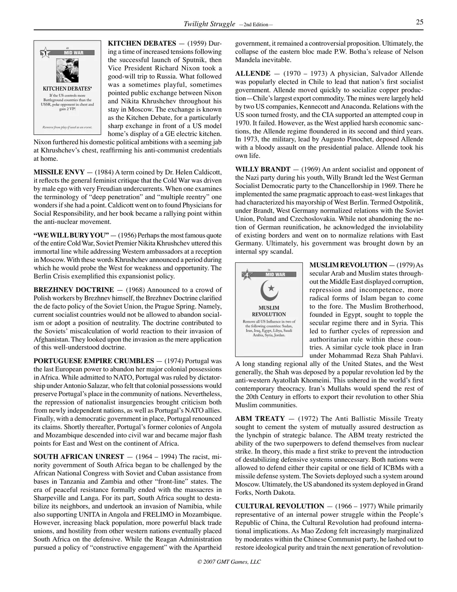
© 2007 GMT Games, LLC
厨房辩论 —（1959） 在「斯普特尼克」卫星成功发射后紧张加剧的时期，时任副总统理查德·尼克松赴俄进行友好访问。随后在他逗留莫斯科期间，尼克松与尼基塔·赫鲁晓夫展开了一场时而轻松诙谐、时而针锋相对的公开交锋。这场交锋被称为「厨房辩论」，得名于双方在一套美式样板房通用电气厨房展示区前一场格外尖锐的争论。尼克松以看似轻戳赫鲁晓夫胸口的姿态推进了其国内政治抱负，重新确认了他在国内的反共立场。
导弹嫉妒 —（1984） 这一术语由海伦·卡尔迪科特博士创造，反映了冷战由男性自我驱动、带有强烈弗洛伊德式潜流的普遍女性主义批评。当人们审视「深度穿透」「多重再入」这类术语时，难免怀疑她说得有道理。卡尔迪科特后来创立了「医师社会责任组织」，她的著作成为反核运动中的集结点。
「我们会埋葬你们」—（1956） 这或许是整个冷战最著名的一句话，苏联部长会议主席尼基塔·赫鲁晓夫在莫斯科招待西方使节的招待会上抛出了这句不朽名言。以此为契机，赫鲁晓夫宣布进入一个试探西方弱点与机会的时期。柏林危机正是这种扩张主义政策的缩影。
勃列日涅夫主义 —（1968） 由勃列日涅夫本人向波兰工人集会宣布，勃列日涅夫主义阐明了苏联的事实政策，即「布拉格之春」所示：现有社会主义国家不得放弃社会主义或采取中立立场。该主义助长了苏联对入侵阿富汗之世界反应的误判——他们把入侵视为这条人尽皆知的主义的一次寻常运用。
葡萄牙帝国崩解 —（1974） 葡萄牙是最后一个放弃其非洲主要殖民地的欧洲强权。葡萄牙虽为北约成员，却处于安东尼奥·萨拉查的独裁统治之下；萨拉查认为殖民地能保住葡萄牙在国际社会中的位置。然而对民族主义起义的镇压招致了新独立国家以及葡萄牙北约盟友的批评。最终，在建立民主政府后，葡萄牙放弃了其主张。此后不久，其前殖民地安哥拉与莫桑比克陷入内战，成为东西方在非洲大陆的主要引爆点。
南非动荡 —（1964–1994） 南非的种族主义少数派政府开始受到非洲人国民大会的挑战，后者在坦桑尼亚、赞比亚等「前线」国家获得苏联与古巴的协助。和平抵抗的时代随着沙佩维尔与兰加的屠杀正式终结。南非方面则寻求动摇邻国稳定，入侵纳米比亚，同时支持安哥拉的 UNITA 与莫桑比克的抵抗运动。然而，黑人人口增长、更强大的黑人工会以及西方各国的敌意，最终使南非转入守势。里根政府对种族隔离政府推行「建设性接触」政策，这始终充满争议。最终，东方集团的崩溃使 P.W. 博塔释放纳尔逊·曼德拉成为必然。
阿连德 —（1970–1973） 医生出身的萨尔瓦多·阿连德在智利经民选上台，领导该国第一个社会主义政府。阿连德迅速推进智利最大出口商品——铜——生产的国有化。这些矿场多数掌握在两家美国公司肯尼科特与阿纳康达手中。与美关系很快转冷，中央情报局支持了 1970 年的一场政变企图，但失败了。随着西方实施严厉经济制裁，阿连德政权在其第二、第三年举步维艰。1973 年，奥古斯托·皮诺切特领导的军方以一场对总统府的血腥攻势推翻了阿连德，阿连德自尽。
维利·勃兰特 —（1969） 年轻时是热忱的社会主义者与纳粹党的反对者，维利·勃兰特于 1969 年率领西德社会民主党赢得总理之位。他在此推行了与其执掌西柏林时一脉相承的务实东西方接触路线，被称为「东方政策」。在勃兰特治下，西德与苏联、波兰和捷克斯洛伐克实现了关系正常化。他没有放弃两德统一的构想，同时承认了现有边界的不可侵犯性，并与东德关系正常化。最终，他的政府因一起内部间谍丑闻垮台。
穆斯林革命 —（1979） 随着中东各地世俗阿拉伯与穆斯林国家展露出腐败、压制与无能，更激进的伊斯兰形式开始崭露头角。发源于埃及的穆斯林兄弟会试图推翻埃及与叙利亚的世俗政权，这导致这些国家内部压制与威权统治的循环加深。伊朗在穆罕默德·礼萨·巴列维国王治下也发生了类似的循环。这位美国乃至整个西方的长期地区盟友，被霍梅尼领导的反西方民众革命推翻，开启了世界上第一个当代政教合一体制。伊朗的神职者们将在 20 世纪余下的时间里致力于向其他什叶派穆斯林社群输出革命。
反导条约 —（1972） 《反弹道导弹条约》试图将相互确保摧毁体制确立为战略平衡的支柱。反导条约限制了两个超级大国防御核打击的能力。理论上，这使为阻止破坏稳定的防御系统部署而抢先发动第一次打击变得不必要。两国均被允许用一套导弹防御系统保护首都或一处洲际导弹阵地。苏联在莫斯科周边部署了这样一套系统；美国则最终放弃了部署在北达科他州大福克斯的系统。
文化大革命 —（1966–1977） 虽然主要反映中华人民共和国内部的权力斗争，文化大革命具有深远的国际影响。随着毛泽东日益感到被中共党内的温和派边缘化，他发动运动以恢复意识形态纯洁性并锻炼下一代革命者……
aries. 这 resulting turmoil of purges, denunciations, and creation
of the Red Guard brought China to the brink of civil war. It also
made more pronounced, the rupture between China and the Soviet
Union. However, the anarchy and isolationism that reigned made
rapprochement between the United States and the PRC impossible.
As the Nixon administration took office, the gulf between the two
nations appeared wider than ever.
FLOWER POWER — (1965 – 1970) A term reportedly coined by
the poet Allen Ginsberg, "flower power" came to represent the non-
violence and peace movements of the 1960s. The classical context
for the phrase was the placement of daisies into rifle muzzles, and
the anti-war slogan "make love, not war." Flower power is also
representative of the general ambivalence to the use of military force
that resulted from the American experience in Vietnam.
U-2 INCIDENT — (1960) Starting in
1955, the United States began running
surveillance flights over the Soviet Union
at altitudes beyond Soviet anti-aircraft
ranges. However, in May of 1960, a
Soviet Sam II missile struck Francis
Gary Powers' aircraft in Soviet airspace.
Plane, pilot and gear were captured by
the USSR. The incident proved a major
embarrassment to the Eisenhower ad-
ministration, as they initially denied that
the US was running such missions. The
successful downing of the U-2 caused a major chill in superpower
relations and was a propaganda coup for the Soviet Union.
OPEC — (1960) Founded to allow oil
producing countries to have more control
over the price of oil, and thereby state rev-
enues, OPEC has grown into an institution
that controls two-thirds of the world's oil
reserves and generates roughly half of the
world's oil exports. The creation of OPEC
was a major blow to the control of the
global oil market by the Western giants like
Exxon and British Petroleum. While OPEC
does include non-Middle Eastern countries
such as Venezuela, Indonesia and Nigeria,
it is heavily dominated by countries from that region. As a result,
OPEC has intervened in the political crises there. Most famously,
OPEC refused oil exports to Western countries supporting Israel in
the Yom Kippur (or October) War. This resulted in a 400% increase
in oil prices and required rationing in the West.
"LONE GUNMAN" — (1963) While campaigning in Dallas, Texas,
President John F. Kennedy was assassinated by Lee Harvey Oswald.
Two commissions, the Warren Commission, and the House Select
Committee on Assassinations, differed over whether or not Oswald
acted alone. In any case, the circumstances of the President's death
threw the country into a panic and created ample opportunity for
conspiracy theories ranging from the Mafia, the Cuban government,
the KGB and America's own CIA. It also marked the beginning of
a string of high profile political assassinations in the United States
that would include Dr. Martin Luther King and John Kennedy's
brother (and Democratic Presidential candidate) Robert Kennedy.
These untimely deaths shook American confidence and added to the
malaise of the Vietnam era.
COLONIAL REARGUARDS — (1946 – 1988) The Cold War
was instigated in the context of an evolving international system.
As the world relinquished a multi-polar system comprised of poly-
glot empires, it replaced it with a bi-polar system dominated by
continental nation states. Anti-colonial movements tended to have
strong anti-western sentiments, as the foremost colonial powers
were now in the western camp. However, the drive to independence
was not uniform, nor uniformly successful. Several long rear-guard
actions were fought by the colonial powers that either lengthened
their stay or maintained a quasi-colonial relationship with the
newly independent country. British intervention in Malaya (1948),
the French resistance to Algerian independence (1954) and South
African intransigence in Namibia (1966) all serve as examples of
this aspect of the post colonial experience.
PANAMA CANAL RETURNED — (1970) Though widely criti-
cized by the right domestically, the Carter administration's decision
to turn over the Panama Canal to Panama proved immensely popular
with Latin America. The Canal was a vital strategic link for the
United States navy both during the First and Second World Wars.
However, by the time of the Korean War, the canal was no longer
large enough to accommodate contemporary warships. With its
utility to the U.S. military greatly diminished, while its propaganda
value as a relic of American imperialism still on the rise, Carter
realized that gradual hand-over of the canal was the best policy
alternative.
CAMP DAVID ACCORDS — (1978)
Following a lull in the Middle East peace
process caused by the 1976 presidential
elections, President Carter entered office
with a burst of new energy on the subject.
Through direct personal appeal, Carter
was able to bring ultimate resolution
to the Yom Kippur War and completely
change the dynamic of the Middle East-
ern question. Israel and Egypt normalized
relations and a framework for Middle East
peace was agreed to. Years later, this
would allow for the Oslo accord, and the Jordanian–Israeli Peace
Agreement. Additionally, Carter also secured the complete realign-
ment of Egypt. Once a Nasser led hotbed of anti-Western feeling,
Egypt was to become one of America's foremost allies in the region.
Sadat would pay dearly for the leadership he showed during the talks.
He was assassinated by Islamic radicals in 1981.
PUPPET GOVERNMENTS — (1949 – ?) Not a concept unique
to the Cold War, the term "puppet governments" refers to a regime
that holds power due to, and with the support of, either the Soviet
Union or the United States. A derisive term, it is almost always
used by the opponents of a state to undermine the government's
legitimacy. Both the Soviets and the Americans would apply the
term to any closely allied state, but it might be better understood in
the context of the Diem government in South Vietnam or Mariam
government of Ethiopia.
GRAIN SALES TO SOVIETS — (1973 –1980, 1981 – ?) In 1973,
difficult climatic circumstances and dramatic crop failures prompted
President Nixon to allow for massive grain sales to the Soviet Union.
While a blow to Russian pride, the program was nevertheless a step
towards normalized relations between the superpowers. Additionally,
it provided an enduring domestic lobby to pressure for continued
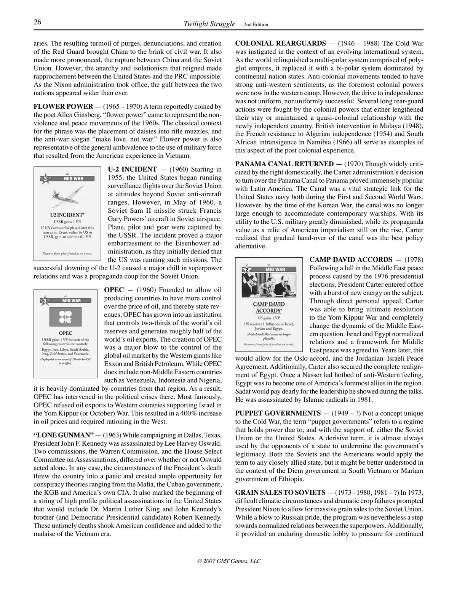
若望·保禄二世当选教皇 —（1978） 16 世纪以来首位非意大利裔教皇，若望·保禄二世代表了天主教在世界舞台上的复兴。美国史上首次与教廷建立正式外交关系。作为从共产主义波兰当选的教皇，若望·保禄二世给波兰领导层提出了巨大难题：批评新教皇只会疏远公众，拥抱它又与共产主义学说背道而驰。何况若望·保禄二世是众所周知的共产主义激烈批评者。他的当选标志着波兰内部政治动态的转折点，并最终催生团结工会运动。米哈伊尔·戈尔巴乔夫曾说：没有若望·保禄二世，铁幕的倒塌是不可能的。
拉美敢死队 —（1960–1989） 整个冷战期间，左右翼政府都支持在面对政权威胁时动用过度武力的反动政权。虽然这尤其是拉美右翼政府的癖好，左翼政府也证明了它们对暴力的娴熟运用。萨尔瓦多、危地马拉和哥伦比亚仍是政府主导谋杀行为最触目惊心的例证。危地马拉的奥索里奥总统曾无耻地说过：「如果必须把这个国家变成墓地才能平定它，我会毫不犹豫。」
美洲国家组织成立 —（1948、1967） 以促进西半球民主为明确目标而成立，美洲国家组织（OAS）在推动美国在西半球利益方面偶尔发挥用处。它在古巴导弹危机与美国入侵格林纳达期间为美国行动提供了国际合法性。1967 年布宜诺斯艾利斯的宪章修订加入了贸易促进与经济发展内容，并设立常设外交场所——设在华盛顿的成员国大会。
尼克松打中国牌 —（1972） 意识到与中国关系正常化是美国从南越撤军的关键，尼克松寻求与毛泽东举行峰会。他派亨利·基辛格与中华人民共和国外长周恩来密谈为此行铺路。利用中苏关系的恶化，尼克松取得了冷战期间或许最伟大的外交胜利。峰会后发表的《上海公报》对两国包括台湾与越南在内的若干根本分歧避而不谈，但有一点已昭然若揭：苏联再也不能在地区冲突中指望中国的支持。尼克松虽表达了迅速实现两国关系完全正常化的意愿，水门事件却中断了这些计划，恢复两国外交关系的任务落到了吉米·卡特身上。
萨达特驱逐苏联人 —（1972） 安瓦尔·萨达特早年参与反对英国扶植的埃及王权的反殖民活动。他在纳赛尔任内担任副总统，接任总统时继承了与苏联日益恶化的关系。苏联拒绝埃及增加经济与军事援助的要求，而埃及人努力在两个阵营间左右逢源。作为回应，萨达特驱逐了在埃及的 5000 名苏联军事顾问和 15000 名空军人员。1973 年战争后经斡旋达成中东和平，萨达特由此确信需要与华盛顿建立更紧密的关系。
穿梭外交 —（1973） 利用交通与通信进步的个性化外交，「穿梭外交」是亨利·基辛格任国务卿期间的标志。最著名的应用是在赎罪日战争后为以色列与埃及斡旋停火。基辛格通过充当埃以双方的私人中间人，在谈判中保持关键角色并最大限度压缩了苏联对谈判进程的影响。在处理美中关系正常化时，基辛格也采用类似风格。
美国之音 —（1947） 1942 年在战争信息办公室之下组建，美国之音最初向纳粹占领的欧洲播送战争新闻。1947 年它调整使命，开始对苏联广播。美国之音已成为世界上最知名的国际广播机构之一，为东方集团的国家管控媒体体系提供了强有力的外部声音。与自由欧洲电台、自由亚洲电台一起，美国之音成为冷战期间美国公共外交的标志。
解放神学 —（1969–?） 第二次梵蒂冈大公会议的产物，解放神学强调耶稣基督作为解放者。支撑这一观点的神学流派发源于拉丁美洲并在那里兴盛，尤其在耶稣会中。虽然由于其马克思主义潜流从未被若望·保禄二世教皇接纳，解放神学在第三世界的许多神父与平信徒中仍广受欢迎。不过它对社会正义的强调与对资本主义弊端的批判已被纳入更广泛的教会教义。
乌苏里江冲突 —（1969） 在关系多年恶化与中国首次核试验之后，中华人民共和国与苏联的武装力量在其漫长而多孔的边境线上发生冲突。乌苏里江与黑龙江的归属在两国间悬而未决，成为摩擦之源。随着边境两侧军事集结，紧张局势升级为数次激烈交火。虽然全面战争得以避免，这场冲突直接促成了中国迅速与美国关系正常化的意愿。
「不要问你的国家能为你做什么……」—（1961） 这或许是历任美国总统最有力量的就职演说中的点睛之句，肯尼迪总统开启了冷战期间美国的自信与决心时代。深受美国青年爱戴的肯尼迪激发起新的奉献精神（下接第 28 页）。
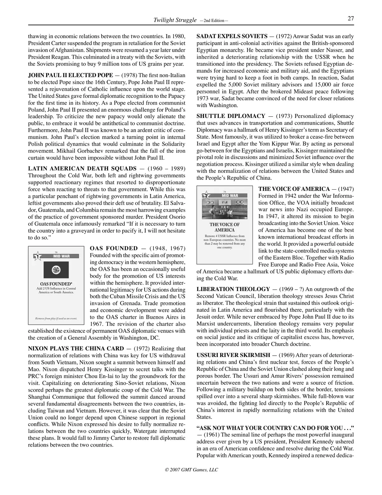
© 2007 GMT Games, LLC
……两国经济关系解冻。1980 年，卡特总统为报复苏联入侵阿富汗而中止了该计划。一年后在里根总统任内恢复，最终促成与苏联的条约，苏方承诺每年购买 900 万吨美国谷物。
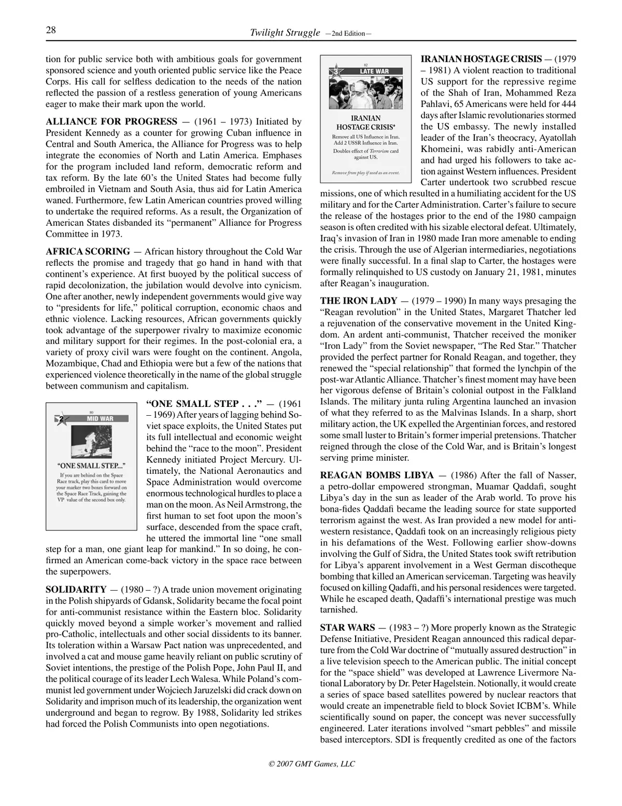
致力于公共服务，既有雄心勃勃的政府资助科学计划，也有面向青年的公共服务，如和平队。他呼吁无私奉献于国家需求，反映了那一代不安于现状的美国年轻人的激情，他们渴望在世界留下自己的印记。
进步联盟 — (1961 – 1973) 由肯尼迪总统发起，以应对古巴在中南美洲日益增长的影响力，进步联盟旨在帮助整合北美和拉丁美洲的经济。该计划的重点包括土地改革、民主改革和税收改革。到60年代末，美国已完全陷入越南和南亚事务，因此对拉丁美洲的援助逐渐减少。此外，很少有拉丁美洲国家愿意进行必要的改革。因此，美洲国家组织于1973年解散了其"永久性"的进步联盟委员会。
非洲计分 — 冷战期间的非洲历史反映了该大陆经历中的希望与悲剧。起初，快速非殖民化的政治成功令人振奋，但这种喜悦最终演变为犬儒主义。一个接一个，新独立的政府让位给"终身总统"、政治腐败、经济混乱和种族暴力。缺乏资源的非洲政府迅速利用超级大国之间的竞争来最大化对其政权的经济和军事支持。在后殖民时代，大陆上爆发了多种代理人内战。安哥拉、莫桑比克、乍得和埃塞俄比亚只是理论上以共产主义与资本主义全球斗争为名而经历暴力的几个国家。
"一小步..." — (1961 – 1969) 在多年落后于苏联太空成就之后，美国将其全部智力和经济资源投入"登月竞赛"。肯尼迪总统启动了水星计划。最终，国家航空航天局克服了巨大的技术障碍，将人类送上月球。当第一个踏上月球表面的尼尔·阿姆斯特朗从航天器上下来时，他说出了不朽的名言："对一个人来说是一小步，对人类来说是一大步。"通过此举，他确认了美国在超级大国太空竞赛中的 comeback 胜利。
团结工会 — (1980 – ?) 一个起源于波兰格但斯克造船厂的工会运动，团结工会成为华沙条约组织内部反共产主义抵抗的焦点。团结工会迅速超越了一个简单的工人运动，将亲天主教的知识分子和其他社会异见者团结到其旗帜下。在华沙条约国家内对它的容忍是前所未有的，这很大程度上依赖于公众对苏联意图的审视、波兰教皇约翰·保罗二世的声望以及其领导人莱赫·瓦文萨的政治勇气。虽然沃伊切赫·雅鲁泽尔斯基领导下的波兰共产党政府确实镇压了团结工会并监禁了其大部分领导人，但该组织转入地下并开始重新成长。到1988年，团结工会领导的罢工迫使波兰共产党人进行公开谈判。
伊朗人质危机 — (1979 – 1981) 对美国长期以来对伊朗国王穆罕默德·礼萨·巴列维专制政权支持的暴力反应，伊斯兰革命者冲击美国大使馆后，65名美国人被扣押了444天。伊朗神政体制的新领导人霍梅尼狂热反美，并敦促其追随者采取行动对抗西方影响。卡特总统进行了两次取消的救援任务，其中一次导致美国军方和卡特政府蒙羞。卡特未能确保在1980年竞选季结束前使人质获释，这通常被认为是他在选举中惨败的原因。最终，伊拉克1980年入侵伊朗使伊朗更愿意结束危机。通过使用阿尔及利亚中间人，谈判最终成功。对卡特最后的羞辱是，人质在里根就职典礼后几分钟，于1981年1月21日正式移交美国监管。
铁娘子 — (1979 – 1990) 在许多方面预示了美国的"里根革命"，玛格丽特·撒切尔领导了英国保守运动的复兴。一个坚定的反共产主义者，撒切尔被苏联报纸《红星》称为"铁娘子"。撒切尔为罗纳德·里根提供了完美的合作伙伴，他们一起重申了构成战后大西洋联盟支柱的"特殊关系"。撒切尔最辉煌的时刻可能是她坚决捍卫英国在福克兰群岛的殖民前哨站。统治阿根廷的军政府入侵了他们所称的马岛。在一次短暂而激烈的军事行动中，英国驱逐了阿根廷军队，恢复了英国昔日帝国野心的些许光彩。撒切尔一直执政到冷战结束，是英国任职时间最长的首相。
里根轰炸利比亚 — (1986) 纳赛尔倒台后，一个靠石油美元支持的强人穆阿迈尔·卡扎菲寻求作为阿拉伯世界领袖的辉煌时刻。为了证明自己的诚意，卡扎菲成为国家支持的反西方恐怖主义的主要来源。随着伊朗为反西方抵抗提供了新模式，卡扎菲在诋毁西方时表现出日益增长的宗教虔诚。在涉及锡德拉湾的早期对峙之后，美国对利比亚涉嫌参与导致一名美国军人死亡的一起西德迪斯科舞厅爆炸事件迅速进行了报复。目标主要集中在杀死卡扎菲，他的个人住所被锁定为目标。虽然他逃过一死，但卡扎菲的国际声望大大受损。
星球大战 — (1983 – ?) 更正式的名称是战略防御倡议，里根总统在一次向美国公众直播的电视讲话中宣布了这一与冷战"相互确保摧毁"教义的激进背离。"太空盾"的初始概念由彼得·哈格尔斯坦博士在劳伦斯利弗莫尔国家实验室开发。理论上，它将创建一系列由核反应堆驱动的基于空间的卫星，形成一个无法穿透的场来阻挡苏联的洲际弹道导弹。尽管在科学上理论上可行，但这一概念从未成功实现。后来的迭代涉及"智能卵石"和基于导弹的拦截器。SDI通常被认为是导致
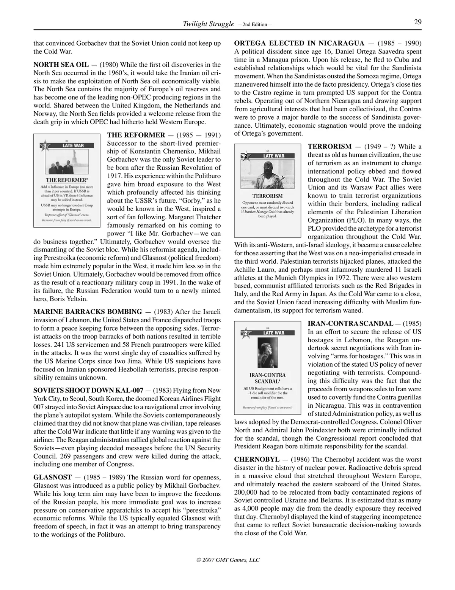
© 2007 GMT Games, LLC
这使戈尔巴乔夫确信，苏联无法继续维持冷战。
北海石油——（1980）尽管北海的首次石油发现始于20世纪60年代，但直到伊朗石油危机爆发，开采北海石油才具备了经济上的可行性。北海蕴藏着欧洲的大部分石油储量，并已成为世界领先的非欧佩克产油区之一。北海油田由英国、荷兰和挪威共有，它为西欧提供了一个受欢迎的解脱，使其摆脱了欧佩克此前对西欧的死亡钳制。
改革者——（1985 — 1991）
米哈伊尔·戈尔巴乔夫是短命的康斯坦丁·契尔年科总理任期的继任者，他是唯一一位在1917年俄国革命之后出生的苏联领导人。他在政治局内的经历使他广泛接触了西方，这深刻影响了他对苏联未来的看法。在西方，他以“戈尔比”的绰号为人所知，并激发了一种狂热的追随。玛格丽特·撒切尔在他上台时曾有一句名言：“我喜欢戈尔巴乔夫先生——我们可以一起做生意。”最终，戈尔巴乔夫主导了苏联集团的解体。虽然他的改革议程，包括“重建”（经济改革）和“公开性”（政治自由），使他在西方极受欢迎，但在苏联国内却并非如此。最终，戈尔巴乔夫在1991年的一场反动军事政变中被解除职务。在政变失败后，俄罗斯联邦转向了一位新塑造的英雄，鲍里斯·叶利钦。
海军陆战队军营爆炸案——（1983）以色列入侵黎巴嫩后，美国和法国派遣军队组成维和部队驻扎在交战双方之间。针对两国军队营房的恐怖袭击造成了惨重的损失。241名美军士兵和58名法国伞兵在袭击中丧生。这是自硫磺岛战役以来，美国海军陆战队单日伤亡最惨重的一天。尽管美国怀疑的焦点指向了伊朗资助的真主党恐怖分子，但确切的责任方至今仍不清楚。
苏联击落KAL-007航班——（1983）从纽约飞往韩国首尔的倒霉大韩航空007航班，由于飞机自动驾驶系统的导航错误，偏航进入了苏联领空。尽管苏联当时声称他们不知道那是一架民用飞机，但冷战后公布的录音带表明，苏联几乎没有向该客机发出任何警告。里根政府集结了全球对苏联的反应——甚至在联合国安理会面前播放了破译的密电。269名乘客和机组人员在袭击中丧生，其中包括一名国会议员。
公开性——（1985 – 1989）“Glasnost”是俄语中代表“公开”的词汇，由米哈伊尔·戈尔巴乔夫作为一项公共政策引入。虽然他的长期目标可能是改善俄罗斯人民的自由，但他更直接的目标是增加对保守派官僚的压力，迫使他们接受他的“重建”经济改革。虽然美国通常将“公开性”等同于言论自由，但实际上它是试图让政治局的工作运作透明化。
奥尔特加在尼加拉瓜当选——（1985 – 1990）
丹尼尔·奥尔特加·萨维德拉从16岁起就是政治异见者，曾在马那瓜监狱服刑。获释后，他逃往古巴并建立了一些关系，这些关系对桑地诺运动至关重要。当桑地诺民族解放阵线推翻索摩查政权时，奥尔特加设法让自己成为了事实上的总统。奥尔特加与卡斯特罗政权的密切关系反过来促使美国支持康特拉叛军。康特拉叛军在尼加拉瓜北部开展活动，并从那些被集体化的农业利益集团那里获取支持，事实证明他们是桑地诺政府取得成功的重大障碍。最终，经济停滞成为了奥尔特加政府垮台的原因。
恐怖主义——（1949 – ?）尽管恐怖主义是与人类文明一样古老的威胁，但将其作为改变国际政策的工具，在整个冷战期间却时起时落。众所周知，苏联及其华约盟国在其境内训练恐怖组织，包括巴勒斯坦解放组织（PLO）的激进分子。在许多方面，PLO在整个冷战期间提供了恐怖组织的原型。凭借其反西方、反以色列的意识形态，它成了那些断言西方正在第三世界进行新帝国主义十字军东征的人的著名理由。巴勒斯坦恐怖分子劫持飞机、袭击阿基莱·劳伦号游轮，或许最臭名昭著的是在1972年慕尼黑奥运会上谋杀了11名以色列运动员。此外还有位于西方、与共产主义有联系的恐怖分子，如意大利的红色旅和日本的赤军。随着冷战接近尾声，苏联面临穆斯林原教旨主义日益严重的威胁，其对恐怖主义的支持也随之衰退。
伊朗-康特拉丑闻——（1985）为了争取释放被扣押在黎巴嫩的美国人质，里根政府与伊朗进行了涉及“以武器换人质”的秘密谈判。这违反了美国宣称的绝不与恐怖分子谈判的政策。使问题更加复杂的是，向伊朗出售武器的收益被用来秘密资助尼加拉瓜的康特拉游击队。这违背了政府既定的政策，也违反了由民主党控制的国会通过的法律。奥利弗·诺思上校和约翰·波因德斯特海军上将均因该丑闻受到刑事起诉，尽管国会报告得出结论，里根总统对该丑闻负有最终责任。
切尔诺贝利——（1986）切尔诺贝利事故是核电历史上最严重的灾难。放射性碎片形成巨大的云层扩散，蔓延至整个西欧，最终到达美国东海岸。20万人不得不从苏联控制的乌克兰和白俄罗斯受严重污染的地区撤离。据估计，多达4000人可能因在那一天受到的致命辐射而死亡。切尔诺贝利暴露出了一种令人震惊的 incompetence（无能），这种无能后来成为了冷战临近结束时苏联官僚决策的写照。
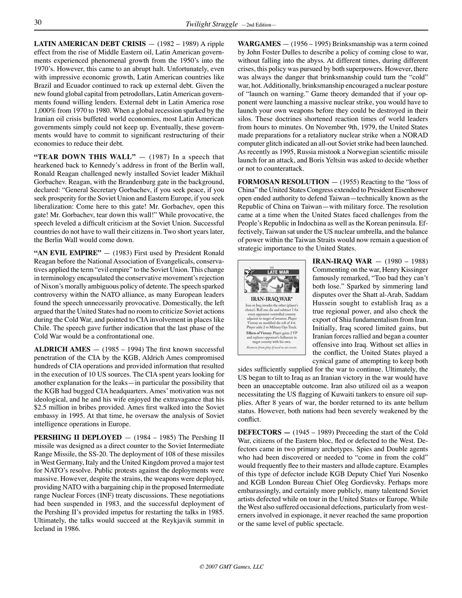
© 2007 GMT Games, LLC
拉美债务危机 —（1982–1989） 中东石油崛起带来的涟漪效应下，拉美各国政府在 1950 至 1970 年代经历了惊人的增长，但这戛然而止。不幸的是，即便经济增速可观，巴西、厄瓜多尔等拉美国家仍不断累积外债。有了石油美元带来的全球新增资本，拉美各国政府不愁找不到愿意放贷的债主。拉美外债总额从 1970 到 1980 年增长了 1000%。当伊朗石油危机引发的全球衰退冲击各国经济时，多数拉美政府根本无力应付。最终，这些政府不得不承诺对经济进行重大结构调整以削减债务。
「推倒这堵墙」—（1987） 在一场呼应肯尼迪柏林墙前演说的演讲中，罗纳德·里根向新上任的苏联领导人米哈伊尔·戈尔巴乔夫发起挑战。里根以勃兰登堡门为背景宣告：「戈尔巴乔夫总书记，如果你寻求和平，如果你寻求苏联与东欧的繁荣，如果你寻求自由化：到这扇门前来！戈尔巴乔夫先生，打开这扇门！戈尔巴乔夫先生，推倒这堵墙！」这番话虽具挑衅性，却道出了对苏联的一记致命批评：成功的国家不必把自己的公民圈在墙内。仅仅两年后，柏林墙倒塌。
「邪恶帝国」—（1983） 罗纳德·里根总统在全国福音派协会面前首次使用「邪恶帝国」指称苏联。这一措辞的转变浓缩了保守派运动对尼克松道德模糊的缓和政策的摒弃。演讲在北约内部引发争议，许多欧洲领导人认为其无必要地挑衅。在国内，左派则主张美国在冷战期间无权批评苏联的行为，并援引中情局在智利等地的介入。这次演讲进一步表明冷战的最后阶段将是对抗性的。
奥尔德里奇·艾姆斯 —（1985–1994） 已知首例克格勃对中央情报局的成功渗透，奥尔德里奇·艾姆斯使中情局数百项行动暴露，其提供的信息导致 10 名美国线人被处决。中情局多年来一直在为泄密寻找其他解释——尤其是克格勃是否在情报总部安装了窃听器。艾姆斯的动机并非意识形态：他与妻子享受着 250 万美元贿赂带来的奢靡生活。艾姆斯于 1985 年（译注：原文误作 1995）首次走进苏联大使馆，当时他负责欧洲方向苏联情报行动的分析。
潘兴 II 部署 —（1984–1985） 潘兴 II 导弹是为直接反制苏联中程导弹 SS-20 而设计的。在西德、意大利和英国部署 108 枚该型导弹成为对北约决心的重大考验，针对部署的公众抗议声势浩大。然而尽管摩擦不断，导弹完成部署，为北约在中导条约（INF）谈判中提供了谈判筹码。该谈判曾于 1983 年中止，潘兴 II 的成功部署为 1985 年重启谈判注入动力，最终于 1986 年冰岛雷克雅未克峰会取得成果。
战争游戏 —（1956–1995） 「战争边缘政策」由约翰·福斯特·杜勒斯创造，用来描述逼近战争而不坠入深渊的政策。在不同时期的不同危机中，两个超级大国都推行过这一政策。但战争边缘政策始终存在使「冷」战转热的危险。此外，它还助长了「预警即发射」的核态势。博弈论的要求是：如果对手正在发动大规模核打击，你必须赶在自己的武器在发射井中被摧毁前发射。这些教义把世界各国领导人的反应时间从数小时压缩到几分钟。1979 年 11 月 9 日，当北美防空司令部的一台计算机故障显示苏联已发动全面打击时，美国一度准备实施核反击。就在 1995 年，俄罗斯还把挪威的一次科研火箭发射误认作攻击，鲍里斯·叶利钦被要求决定是否反击。
福尔摩沙决议 —（1955） 作为对「失去中国」的回应，美国国会授权艾森豪威尔总统可以不受限制地以武力保卫台湾（正式称谓为「中华民国」）。该决议出台之际，美国正同时在印度支那与朝鲜半岛面临人民共和国的挑战。事实上，台湾从此处于美国核保护伞之下，台海内部的权力平衡自此成为对美国具有战略重要性的问题。
两伊战争 —（1980–1988） 谈及这场战争，亨利·基辛格有句名言：「可惜他们不能两败俱伤。」战争由阿拉伯河水道的领土争端酝酿而生，萨达姆·侯赛因试图借机确立伊拉克真正地区强权的地位，并遏制伊朗什叶派原教旨主义的输出。伊拉克初期取得有限战果，但伊朗军队重整旗鼓发起反攻进入伊拉克。由于在冲突中没有固定盟友，美国玩了一场犬儒的游戏——让双方都得到足够的军援以维持战争。最终美国开始倒向伊拉克，因为伊朗获胜是不可接受的结果。伊朗还以石油为武器，迫使美国为科威特油轮悬挂美国旗以保障石油供应。8 年战争之后，边界回到战前状态，但两国都被严重削弱。
叛逃者 —（1945–1989） 先于冷战开始，东方集团的公民便不断逃离或叛逃至西方。叛逃者主要分两类。被识破或需要「从寒夜中归来」的间谍与双重间谍常常逃向其主子以躲避追捕，这类叛逃者包括克格勃副手尤里·诺先科与克格勃伦敦站站长奥列格·戈尔季耶夫斯基。或许更令苏联难堪、也更为公众所知的，是许多才华横溢的苏联艺术家在美欧巡演期间叛逃。西方也偶有叛逃，尤其是在谍报领域活动的西方人，但无论规模还是公众关注度都远不及东方。
设计师笔记
漫长的冷战热斗
就像大多数新手游戏设计师一样，我们花了多年时间才完成这款游戏。《冷战热斗》首先是为了满足我们自己的需求而设计的。我们都是卡牌驱动战争游戏的忠实粉丝，这类游戏为整个战争游戏领域注入了新的活力。就像现代版的拉撒路，卡牌驱动战争游戏将我们的爱好从坟墓中带回了人间。然而即使在五年前，当我和阿南达(Ananda)第一次决定尝试设计游戏时，迹象已经很明显。卡牌驱动游戏将变得越来越不像《我们人民》(We The People)和《汉尼拔》(Hannibal)，而越来越像《光荣之路》(Paths of Glory)和《从巴巴罗萨到柏林》(Barbarossa to Berlin)。这并非对赖泽先生(Mr. Raicer)作品的批评。事实上，我们认为正是《光荣之路》展示了卡牌驱动游戏可能有多么丰富。但这与另一个现实相冲突。我们正在变老。我们的生活不再像大学时期那些丰富的游戏时光，而更像"核"家庭中日常工作日的生活。花八小时玩一局游戏变得越来越不可能。因此，我们自私地设计了一款适合我们日程安排的游戏。你可以用玩许多其他游戏"短"方案的时间，从头到尾玩完《冷战热斗》。嘿，如果你真的雄心勃勃，甚至可以交换阵营，从两个角度体验冷战。这话说得有点长，但设计的主要限制就是时间。
我们必须回答的第二个问题是主题领域。我相信内战是影响系统的完美主题。因此，最初我说服阿南达尝试设计一个西班牙内战游戏。几本相关书籍很快让我们相信，要掌握那场战争的政治需要数年时间，坦率地说，我们不想等上几年才开始。于是，阿南达天才地建议用冷战作为替代。这是个绝佳的主题。很少有游戏能严肃地处理冷战的政治方面——即使在冷战期间，这样的游戏也不多。基本的影响系统很好地转化了。历史不是问题，因为作为1980年代的国际关系专业学生，我基本上花了四年时间研究冷战。最后，我经历过的最佳游戏体验之一是克里斯·克劳福德(Chris Crawford)的《权力平衡》(Balance of Power)。这是一款关于冷战政治的游戏，更重要的是，关于超级大国之间危机的边缘政策。直到今天，电脑游戏玩家仍然回顾它的创新。我永远不会忘记当你因为资助肯尼亚游击队之类荒谬的事情而将世界推向核毁灭时，游戏那句不朽的台词：
你引发了核战争。不，没有动画展示或蘑菇云，也没有肢体碎片在空中飞舞。我们不奖励失败。
如果我在高中最后一年失败了，那真的要怪克里斯·克劳福德。所以，阿南达的绝佳想法给了我们尝试重现那款游戏魔力的机会。我们谨慎地使用"游戏"这个词。《冷战热斗》不会超越其能力范围。在真实性和可玩性之间需要妥协时，我们总是选择可玩性。我们希望唤起冷战的感觉，希望人们能获得一些他们以前没有的见解，但我们不奢望这款范围或长度的游戏能假装成为一款模拟游戏。
玩家需要理解的另一点是，游戏有非常明确的观点。《冷战热斗》基本上接受了冷战的所有内部逻辑为真实——即使是那些明显错误的部分。因此，在这个游戏中，唯一重要的是国家与超级大国之间的关系。世界为美苏野心提供了一个方便的棋盘，但所有其他国家都只是那场游戏中的棋子（偶尔可能是主教）。甚至中国也被抽象为一张在两国之间传递的卡片。此外，多米诺理论不仅有效，还是将影响力扩展到一个地区的先决条件。历史学家当然会质疑所有这些假设，但遵循设计理念，我们认为它们能带来更好的游戏。
《冷战热斗》与其他冷战游戏一个非常显著的区别是，我们假设核战争将是一件坏事。许多其他设计让释放核"精灵"的想法变得不可抗拒。从我们事后回顾的角度看，核战争是不可想象的，这就是它没有发生的原因。是的，我们曾接近过，但我们相信理性的行为者会远离按钮。一旦按钮被按下，核战争就会有其自身的残酷逻辑，人类可能因此灭绝。
为了可玩性做了许多决定，但我们将提及其中两个。首先，并非所有地理上相邻的国家都相互连接。这有三个原因。例如，许多国家是联合体，从一开始就打乱了地理。其次，也是最重要的，我们希望多米诺理论有真正的影响力，让玩家缓慢地将影响力扩展到整个地图上。想想那些老纪录片中从苏联向各个方向延伸的红色动画箭头。最后，也是最罕见的情况，国家之间缺乏连接反映了两个盟友之间的地方性敌对。
第二个值得详细说明的决定是哪些国家被标记为"战场国家"。基本上，有三种方式可以获得这种地位。首先，公认的地区强国获得此地位。南美的战场国家很好地反映了这一点。其次，如果一个国家拥有重要的战略资源，这也意味着战场国家地位。显然，中东的大多数战场国家，以及安哥拉和委内瑞拉，都符合这一条件。最后，如果一个国家是超级大国之间的实际战场，如韩国，它就获得战场国家地位。所以，对于我们的英国和澳大利亚同胞们，请知道我们并非将你们排在我们的法国盟友之后。相反，你们是游戏开始时美国在欧洲和亚洲影响力的锚点。
我们对游戏的许多方面感到自豪，但最有趣的是游戏如何能捕捉到冷战的心理。一个区域变得重要仅仅因为你的对手认为它重要——他一定是有原因才去那里的！此外，我们为DEFCON图表与军事行动的互动感到自豪。它确实迫使每回合都有多样化的行动，使游戏更加紧张刺激。
归根结底，《冷战热斗》代表了一丝冷战怀旧。在一个没有国家敌人的世界里，我们的毁灭本身就是目的，冷战似乎只是关于经济的一种古怪分歧。随着宗教沙文主义取代意识形态，我们渴望一个没有无形威胁的更简单时代，为了珍视的原则而对抗我们理解的敌人。所以让我们再次敲击鞋子，拿起热线，在柏林站岗。冷战已经结束，但游戏才刚刚开始。
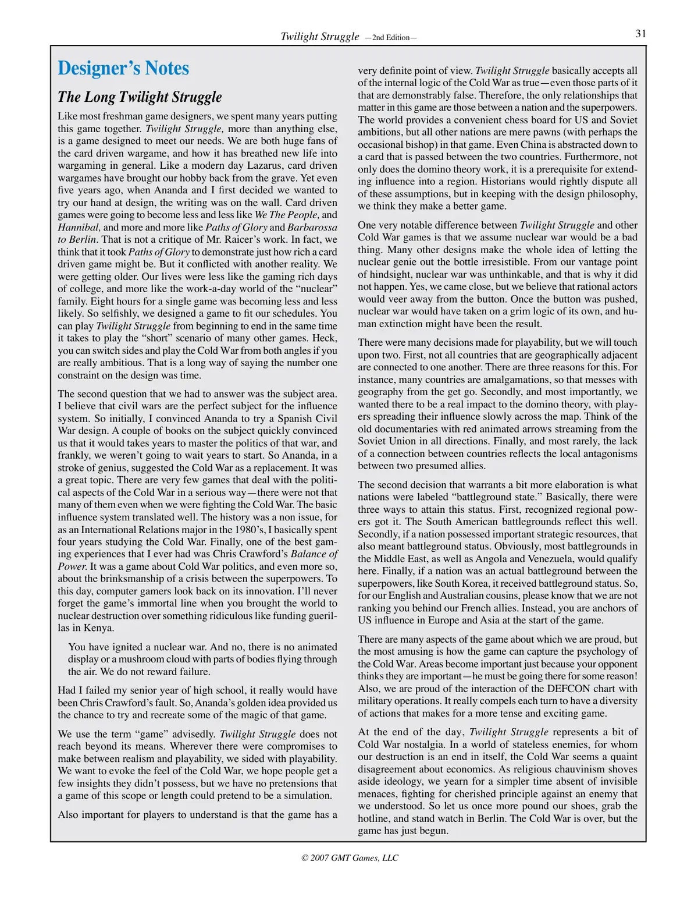
© 2007 GMT Games, LLC
GMT Games, LLC • P.O. Box 1308, Hanford, CA 93232-1308
www.GMTGames.com